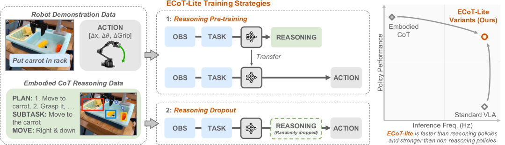
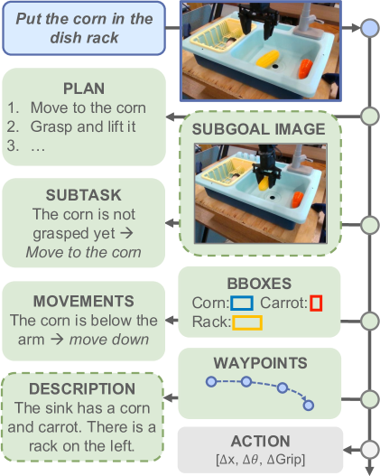
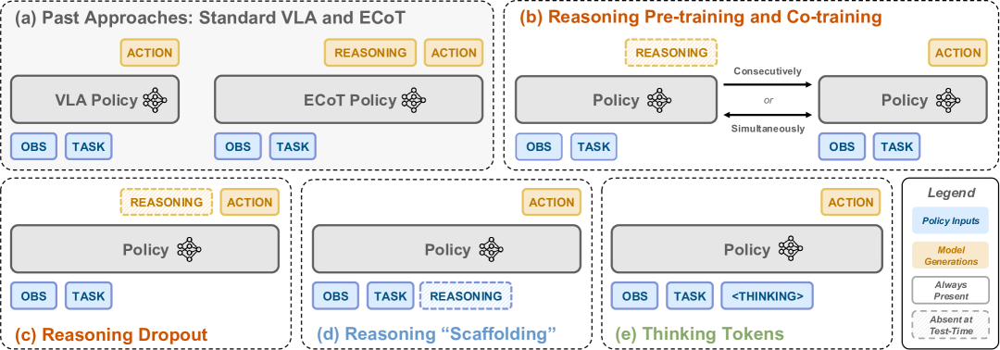
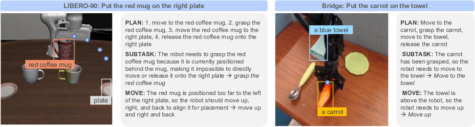
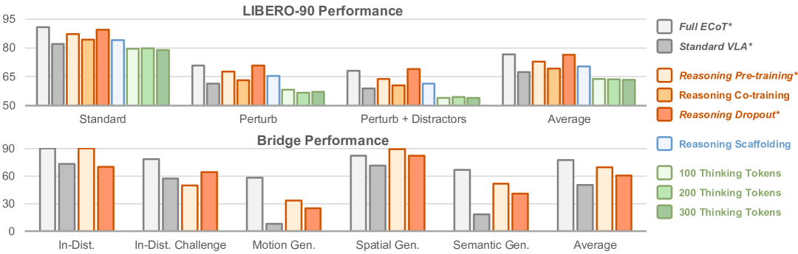
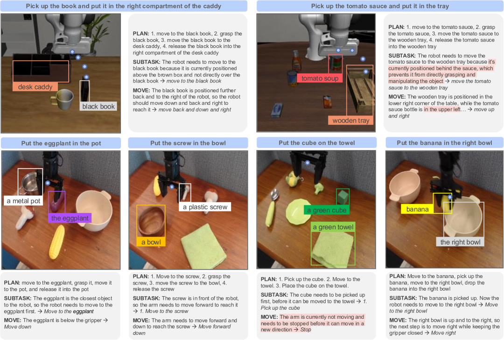
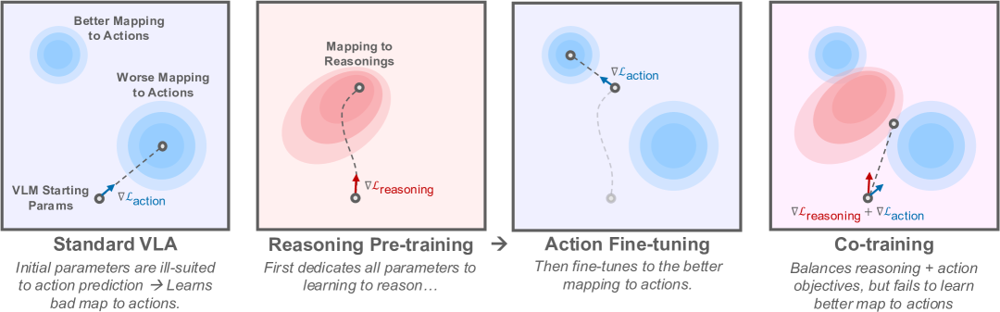
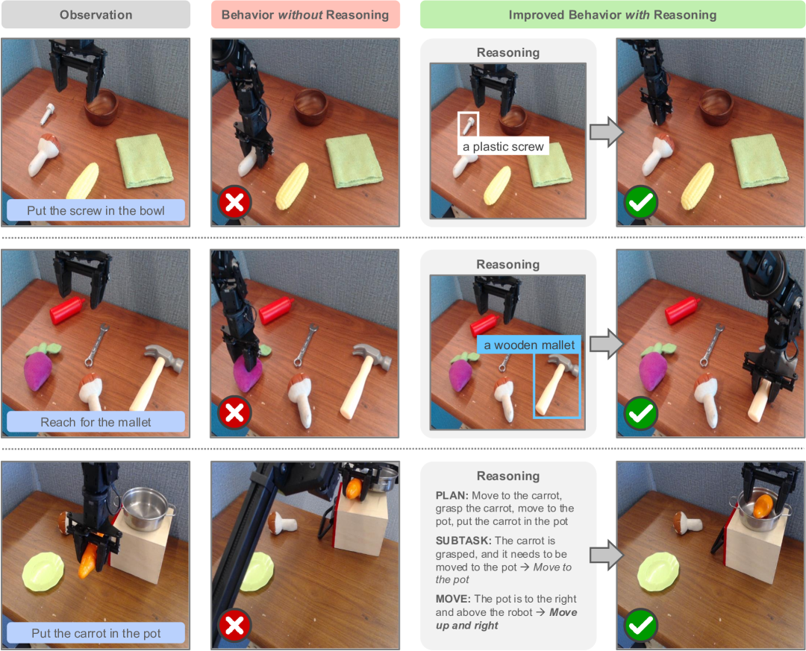
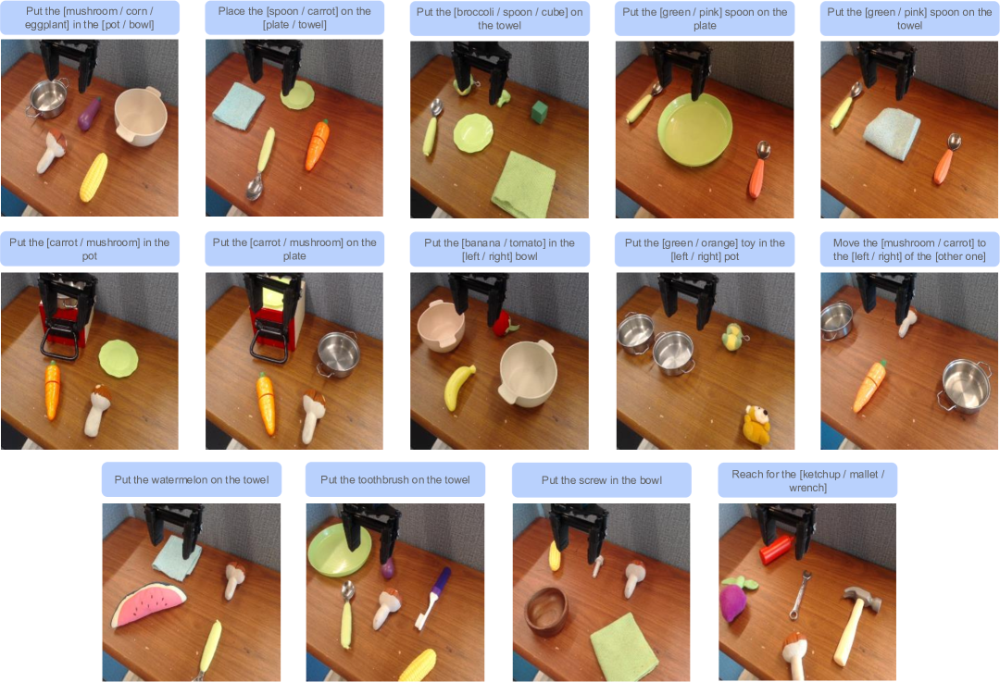

Abstract
로봇 생각의 사슬(Chain-of-Thought, CoT) 추론은 모델이 행동을 선택하기 전에 유용한 중간 표현을 예측하는 방식으로, 로봇 정책, 특히 시각-언어-행동 모델(Vision-Language-Action models, VLA)의 일반화 성능과 동작 수행 능력을 향상시키는 효과적인 방법을 제공한다. 이러한 접근 방식이 성능과 일반화 능력을 향상시키는 것으로 나타났지만, 전문적인 로봇 추론 데이터가 필요하고 추론 속도가 느리다는 핵심적인 한계가 존재한다. 이러한 문제를 해결하는 새로운 로봇 추론 방식을 설계하기 위해서는 추론이 정책 성능에 도움이 되는 이유에 대한 보다 완전한 규명이 필수적이다. 본 연구에서는 로봇 추론이 정책을 개선하는 몇 가지 메커니즘으로 (1) 더 나은 표현 학습(representation learning), (2) 개선된 학습 커리큘럼화, (3) 표현력(expressivity) 증가를 가설로 제시하고, 이를 개별적으로 격리하여 테스트하기 위해 로봇 CoT 추론의 간단한 변형들을 고안한다. 연구 결과, 추론을 생성하도록 학습하는 것은 더 나은 VLA 표현으로 이어지는 반면, 추론에 주의를 기울이는 것(attending)은 향상된 행동 예측을 위해 이러한 특징들을 실제로 활용하는 데 도움이 된다는 것을 발견했다. 이러한 결과는 CoT 추론이 VLA에 도움이 되는 이유에 대한 더 깊은 이해를 제공하며, 이를 바탕으로 로봇 추론을 위한 두 가지 간단하고 가벼운 대안적 레시피를 소개한다. 제안된 접근 방식은 추론을 사용하지 않는 정책 대비 상당한 성능 향상을 달성하고, LIBERO-90 벤치마크에서 최첨단(SOTA) 결과를 기록했으며, 표준 로봇 추론에 비해 3배 빠른 추론 속도를 달성했다.
Keywords: 로봇 추론, 시각-언어-행동 모델

1 Introduction
유용한 로봇은 광범위한 현실 세계 시나리오에 일반화될 수 있어야 한다. 따라서 정책의 일반화(generalization)는 로봇 공학계의 오랜 관심사였다. 최근 연구들은 다양하고 대규모인 로봇 경험 데이터셋으로 정책을 학습시키면 일반화 능력을 크게 향상시킬 수 있음을 보여주었다 [1, 2, 3, 4]. 시각-언어-행동 모델(VLA [5, 6])은 일반화 가능한 정책 학습을 위한 특히 유망한 접근 방식으로 제안되었다. 사전 학습된 시각-언어 모델(VLM)을 다양한 로봇 제어 데이터로 미세 조정함으로써, 이 모델들은 대규모 트랜스포머 아키텍처의 확장성과 VLM의 인터넷 사전 학습에서 얻은 풍부한 의미론적 지식을 결합한다.
이러한 데이터 주도적 체계에서 정책 일반화를 개선하는 표준적인 접근 방식은 종종 번거로운 인간의 원격 조작을 통해 점점 더 큰 로봇 데이터셋을 수집하는 것이지만 [1, 7, 8, 9], 최근 VLA 아키텍처 [10, 11, 12, 13]의 유연성 덕분에 일반화를 개선하기 위한 대안적이고 독립적인(orthogonal) 패러다임인 구체화된 생각의 사슬 추론(Embodied Chain-of-Thought, ECoT [14])이 등장했다. 대형 언어 모델(LLM)의 추론 연구 [15, 16]에서 영감을 받은 이러한 접근 방식은 로봇 행동 예측 문제를 객체 및 로봇 말단 장치(end-effector)의 위치 식별 [17], 하위 작업 계획 [5], 또는 객체 어포던스(affordance) 예측 [18, 19]과 같은 일련의 추론 단계로 나누도록 VLA를 학습시킨다. 중요한 점은, 로봇 정책이 이러한 추론 단계를 수행하도록 학습시키는 것이 추가적인 로봇 데모를 수집할 필요 없이 새로운 장면, 객체 및 작업 명령에 일반화하는 능력을 크게 향상시킬 수 있다는 충분한 증거가 존재한다는 것이다 [14].
그러나 구체화된 생각의 사슬 추론이 정책 일반화를 개선하는 유망한 접근 방식이기는 하지만, 기존의 로봇 추론 방식은 상당한 비용을 수반한다. 학습 데이터에 상세한 추론 지침을 주석으로 달아야 하며, 추론(inference) 중에 확장된 추론 단계를 수행하면 정책 실행 속도가 크게 느려져 단일 행동 예측에 수 초가 걸릴 수도 있다 [14]. 후자의 단점 때문에 실제 환경에서 정교한 로봇 추론 방식을 사용하는 것이 특히 까다로웠다.
본 연구에서는 구체화된 추론 데이터로 정책을 학습시키기 위한 더 실용적인 전략을 개발한다. 우리의 핵심 관찰은 구체화된 생각의 사슬 추론이 일반화에 도움이 되는 이유에 대해 여러 가지 고유한 가설이 존재할 수 있다는 점이다. 예를 들어, 정책의 학습된 표현을 개선하거나 추론 연산량 증가를 통해 실질적인 모델 용량을 늘릴 수 있다. 이러한 관찰을 바탕으로, 우리는 이러한 가설들의 효과를 격리하는 여러 가지 새롭고 가벼운 구체화된 생각의 사슬 레시피인 "ECoT-Lite"를 개발한다. 결정적으로, 이 레시피들은 일반적인 생각의 사슬 정책 학습의 일반화 이점을 대부분 유지하면서도 단점을 회피하므로, 우리의 ECoT-Lite 접근 방식을 훨씬 더 실용적으로 만든다. 구체적으로, ECoT-Lite는 널리 사용되는 LIBERO 시뮬레이션 벤치마크 [20]에서 최첨단 성능을 달성하고, BridgeData V2 평가에서 최첨단 기존 VLA보다 10-19% 우수한 성능을 보이면서도, 기존의 구체화된 생각의 사슬 추론 방식의 1-1.2 Hz에서 표준 VLA의 3.5+ Hz 수준으로 추론 속도를 높였다. 이 과정에서 우리는 구체화된 생각의 사슬이 작동하는 이유에 대한 더 깊은 이해를 도출했으며, 이것이 향후 로봇 추론 연구에 영감을 주기를 바란다.
요약하자면, 본 연구의 핵심 기여는 다음과 같다. (1) 구체화된 생각의 사슬 추론이 정책 성능을 향상시키는 메커니즘에 대한 상세한 실증적 분석을 제공하고, 이를 바탕으로 (2) 로봇 추론 정책을 학습시키기 위한 일련의 새롭고 단순화된 전략을 개발하며, 이를 (3) 단순화된 로봇 추론 레시피가 대폭 향상된 일반화 성능을 유지하면서도 로봇 추론 정책을 훨씬 더 실용적으로 사용할 수 있게 함을 보여주는 종합적인 시뮬레이션 및 실제 로봇 평가를 통해 검증한다.
2 Related Work
시각-언어-행동 모델. 시각-언어-행동 모델(VLA)은 시각-언어 모델(VLM) [21, 22, 23, 24]을 로봇 행동을 출력하도록 조정하여 로봇 정책을 학습시키는 방법이다 [6, 5, 25, 10, 26, 27, 28, 29, 30, 31, 32, 33, 34, 13, 11, 35, 12, 36, 37, 38]. 여러 연구에 따르면 행동 예측을 시각-언어 문제로 프레임화함으로써, 모델이 일반적인 언어 및 시각-언어 작업에 대한 인터넷 규모의 사전 학습 이점을 얻어 더 나은 강건성과 일반화 능력을 갖추게 된다 [5]. VLA는 대규모 데이터셋 [1, 7, 8, 39]에서 행동 복제(Behavioral Cloning, BC)를 통해 학습되며, 일반적으로 행동을 이산 토큰으로 표현한다.
LLM 및 VLM에서의 생각의 사슬. 많은 연구에서 모델이 질문에 대한 답을 내놓기 전에 중간 추론 단계를 생성하는 생각의 사슬(CoT) 추론 [15, 16]이 LLM과 VLM의 성능을 크게 향상시킬 수 있음을 보여주었다. 직관적으로는 모델이 정답을 직접 생성하는 것보다 각각의 중간 단계를 예측하는 것이 더 쉬울 수 있다는 것이다. CoT는 특히 수학을 포함하는 작업 [40, 41]에서 성공적이었으며, 여기서 이러한 직관은 이론적으로 정당화된다. 고정된 크기의 트랜스포머 아키텍처의 마진(marginal)은 정수 산술이나 동적 계획법과 같은 문제를 해결할 만큼 표현력이 충분하지 않지만, 적절히 긴 CoT를 사용하면 LLM이 이러한 문제를 해결할 수 있다 [42]. 추론이 LLM에 도움이 되는 이유에 대한 다른 분석들도 유사한 주장을 펼치며, 중간 추론 단계가 트랜스포머의 표현력을 증가시킨다는 것을 보여준다 [43, 44]. 이러한 이론적 분석은 CoT로 해결할 수 있는 논리적 문제의 복잡성에 대한 통찰을 제공하지만, 추론이 실증적으로 상식적(common-sense) 문제 해결(VQA 또는 로봇 공학 등)에 왜 도움이 되는지 [15]를 다루지 않기 때문에 이 관점은 불완전하다. 상식적 문제 해결은 추상적 기호에 대한 잘 정의된 연산 상의 논리적 연역 대신 현실 세계에 대한 단편적이거나 암묵적인 지식을 연결해야 한다는 점에서 수학 문제와 다르다. 본 연구에서는 CoT가 실제 로봇 공학 문제에 왜 도움이 되는지에 대한 여러 가설을 조사함으로써 이 공백을 메우고자 한다. 우리는 특히 논리적 기호에 대한 추론과 구별되는, 상식적 질의응답과 유사한 의미론적 추론에 의존하는 작업에 초점을 맞춘다.

로봇 추론. LLM에서 CoT의 성공에 영감을 받아, 로봇 공학에 CoT 추론을 활용하려는 여러 연구가 존재한다 [14, 46, 47, 5]. 표준 VLA처럼 관측치를 로봇 행동에 직접 매핑하는 대신, 로봇 공학의 CoT는 최종 행동을 예측하기 전에 먼저 로봇 "추론"을 생성한다 [14]. 전형적인 추론 단계에는 목표를 하위 작업으로 분해하는 것 [48, 5, 49, 50, 51], 로봇의 목표나 움직임의 표현을 포함하는 접지된(grounded) 특징 [52, 53, 54, 46, 55], 객체 경계 상자(bounding box)나 의미론적 키포인트와 같은 작업 관련 시각-의미론적 특징 [56, 14] 등이 포함된다. 기존 연구들은 이러한 중간 추론을 예측하는 것이 행동 예측만으로 학습하는 것에 비해 정책 일반화를 향상시킨다는 것을 보여주지만, 왜 그러한지에 대해서는 분석하지 못했다. LLM과 비교하여, VLA의 로봇 추론은 대개 프롬프팅만으로 유도될 수 없다. 대신 모델이 추론을 생성하도록 명시적으로 학습되는데 [14], 이는 CoT 자체와 추가적인 학습 신호 중 어느 쪽이 성능 향상에 기여하는지 질문을 던지게 만든다. 본 연구는 학습 및 추론 시간 모두에서 CoT의 다양한 측면을 분석함으로써 이를 조사한다.
로봇 표현 학습. VLA가 추론하도록 학습시키는 것은 로봇 학습 분야에서 오랜 역사를 가진 표현 학습(representation learning)의 일종으로 해석될 수 있다. 많은 저자들이 자기중심적/구체화된(egocentric/embodied) 데이터 [57, 58]나 접지된 공간 추론 작업 [59, 60]에서 기본 모델을 사전 학습시킬 것을 제안했는데, 그 결과로 얻은 표현이 제어 학습에 더 유리할 수 있기 때문이다. Burns et al. [61]는 공간-의미론적 이해 작업(예: 세그멘테이션)에 유리한 표현이 로봇 정책의 시각적 강건성을 나타낸다는 실험적 지지를 제공한다. 나아가, VLA의 핵심 동기는 VLM이 사전 학습 중에 일반화 가능한 시각-언어 표현을 학습한다는 점이다 [5]. 고정된 VLM의 표현조차도 정책을 학습하는 데 사용될 수 있으며, 추론의 표현이 포함되면 성능이 더욱 향상된다 [56]. 그러나 더 넓은 범위의 일반화 축을 분석할 때, Gao et al. [62]는 VLM 학습 데이터와의 공동 학습(co-training)이 모든 유형의 일반화에 일률적으로 유익하지는 않다는 것을 발견했다. 마지막으로, Gemini Robotics Team et al. [33]은 기본 VLM을 구체화된 데이터로 학습시킨 다음 이를 추론 로봇 정책으로 미세 조정함으로써 구체화된 표현 학습과 추론을 연결한다.
요약하자면, 이전 연구들은 표현 학습에 초점을 맞추거나, 수학 문제에 대한 CoT의 이론적 분석에 집중하거나, 단순히 CoT가 로봇 공학의 성능을 향상시킨다는 것을 보여주는 데 그쳤다. 우리가 알기로는, 본 연구는 구체화된 로봇 공학 환경에서 CoT를 학습시키고 추론 시점에 사용하는 것이 왜 유익한지 분석하고, 표현 학습과 테스트 시간 연산 측면을 모두 조사한 최초의 연구이다.
3 준비 과정 (Preliminaries)
시각-언어-행동 모델 (Vision-language-action models). 자연어 로 표현된 태스크가 주어졌을 때, 로봇 정책을 얻는 것은 로봇 관측 (예: 이미지 관측 또는 로봇의 고유 수용성 감각 상태)을 조건으로 행동 을 샘플링할 수 있는 함수 을 학습하는 것으로 볼 수 있다. 시각-언어-행동 모델(VLA)의 핵심 아이디어는 단순한 이산화 및 빈 분할(binning) 전략 등을 통해 로봇의 행동을 텍스트 토큰의 시퀀스로 표현함으로써, 시각-언어 모델(VLM)이 로봇 행동을 자기회귀적(autoregressively)으로 출력하도록 미세조정하여 정책을 학습시키는 것이다.
체화된 생각의 사슬 추론 (Embodied chain-of-thought reasoning). 본 연구에서는 대표적인 로봇 추론 접근법으로 체화된 생각의 사슬 추론(Embodied Chain-of-Thought Reasoning, ECoT) [14]을 고려한다. ECoT는 VLA 공식에 간단한 변화를 준다. 즉, 정책이 행동 토큰을 예측하기 전에 먼저 추론 텍스트를 생성하도록 하는 것이다. 가능한 추론 단계에는 상위 수준의 계획(예: 하위 태스크 예측)과 움직임, 그리퍼 위치, 객체 바운딩 박스(bounding box)와 같은 하위 수준의 접지된(grounded) 특징이 모두 포함된다(Fig.˜2 참조). 학습을 위한 추론 데이터를 얻는 전형적인 방법은 다양한 파운데이션 모델을 사용하여 로봇 행동 궤적에 주석을 달아주는 것이다. 학습 시에 이러한 추론 텍스트는 토큰화되어 행동 토큰 앞에 추가되며, 모델은 다음 토큰 예측(기반 VLM의 사전 학습과 동일)을 통해 이를 생성하도록 학습한다. 각 추론 단계는 추론 텍스트를 디코딩한 후 행동을 디코딩하고, 후자를 실행하는 과정을 수반하므로 ECoT 정책의 추론 속도는 낮아진다.
4 왜 체화된 생각의 사슬 추론이 성능을 향상시키는가?
우리는 기존의 단점을 피하면서 체화된 추론 정책을 학습시킬 수 있는 더 실용적인 레시피를 개발하고자 한다. 먼저, 왜 추론이 정책 성능을 향상시키는지에 대한 가설을 수립하는 것부터 시작한다. 그런 다음 이 가설들을 바탕으로 Section˜5에서 추론 정책 학습을 위한 여러 가지 새롭고 가벼운 레시피를 개발하고, Section˜6에서 이를 실증적으로 테스트할 것이다.
가설 1: 체화된 추론은 표현 학습(representation learning)을 향상시킨다.
추론이 주는 이점에 대한 한 가지 가능한 설명은 추론 단계를 통해 모델에 제공되는 추가적인 지식이 모델의 표현(representation)에 영향을 미친다는 것이다. 예를 들어, 추론 궤적은 특정 객체의 위치가 관련이 있음을 나타낼 수 있다. 만약 향상된 표현이 정책 성능 향상의 주된 이유라면, 테스트 시에 실제로 추론을 생성하는 것은 추론 단계에 포함된 정보로 모델을 지도(supervision)하여 모델의 내부 표현이 추론 단계에서 예측해야 하는 특징에 주목하도록 만드는 것에 비해 덜 중요할 것이다. 이것이 사실이라면, 학습 중에는 표현 학습을 향상시키기 위해 추론을 사용하되, 테스트 시에는 느린 추론을 생략하여 낮은 정책 지연 시간(latency)을 유지하는 접근 방식을 설계할 수 있다.
가설 2: 체화된 추론은 학습 커리큘럼을 제공한다.
또 다른 가설은 체화된 추론 특징이 정책에 암묵적인 학습 커리큘럼을 제공한다는 것이다. 즉, 모델이 먼저 하위 수준의 움직임 프리미티브(primitive)에서 로봇 행동으로의 매핑과 같이 비교적 간단한 추론 태스크를 학습한 다음, 전체 관측-행동 예측 태스크로 "단계를 밟아 올라갈" 수 있다는 것이다. 따라서 모델은 처음부터 엔드투엔드(end-to-end) 예측 태스크로 고군분투하며 해결책을 암기하는 데 의존하는 대신, 이미지에서 행동으로의 더 일반화 가능한 매핑을 학습할 수 있다. 유사한 효과가 LLM 학습에서도 관찰된 바 있다 [63]. 이것이 사실이라면, 학습을 위한 "비계(scaffolding)"로 체화된 추론을 단순히 사용하되, 추론(inference) 시에는 이를 완전히 제거하여 정책 롤아웃을 단순화하고 속도를 높이는 학습 레시피를 설계할 수 있다.
가설 3: 체화된 추론은 실질적인 모델 표현력(expressivity)을 증가시킨다.
마지막으로, 체화된 추론은 VLA가 작동하는 토큰 시퀀스의 길이를 늘려준다. 이로 인해 모델은 비슷한 크기의 일반 VLA 정책에 비해 학습 및 추론 중에 더 많은 연산량을 활용하게 되며, 결과적으로 표현력을 실질적으로 증가시킨다. 이와 관련하여 언어 및 시각-언어 모델링 분야의 여러 연구에서는 새로운 정보를 추가하지 않더라도 단순히 토큰의 개수를 늘리는 것만으로도 모델 성능이 향상될 수 있음을 관찰했다 [22, 23, 64, 65]. 마찬가지로, 사전에 데이터에 대한 광범위한 추론 주석을 달 필요 없이 추가적인 토큰을 도입하는 단순화된 학습 레시피를 설계할 수 있다.

5 ECoT-Lite: 체화된 추론 정책을 위한 실용적인 학습 레시피
본 섹션에서는 이전 섹션의 가설들을 활용하여 단순화된 체화된 생각의 사슬 학습 레시피를 설계한다. 우리의 목표는 Section˜3에서 소개된 원래 ECoT 레시피의 일반화 능력 대부분을 유지하면서도, 광범위한 데이터 주석이나 높은 지연 시간의 추론(inference) 필요성을 완화하는 것이다. 제안하는 접근 방식의 개요를 Fig.˜3에 제공한다.
추론 사전 학습 또는 공동 학습. 가설 1에 따라, VLA를 추론 데이터로 사전 학습하거나 공동 학습함으로써 추론 데이터를 사용해 정책의 표현(representations)을 형성할 수 있다. 두 방법 모두 다른 분야에서 흔히 사용된다 [66, 67, 68]. 사전 학습의 경우, 기반 VLM은 추론만 생성하도록 학습된 후 행동만 생성하도록 학습된다. 공동 학습의 경우, VLM은 두 가지 목표를 동시에 학습한다. 즉, 학습 배치의 절반은 관측을 추론에만 매핑하고, 나머지 절반은 행동에만 매핑한다. 이는 추론을 보조 손실(auxiliary loss)로 취급하는 것이다. 추론(inference) 시에 사전 학습 및 공동 학습 정책은 모두 명시적인 추론 없이 표준 VLA로 작동하므로 지연 시간이 낮다.
테스트 시 추론 드롭아웃. 위의 접근 방식들과 유사하게, 여기서의 주요 목표는 체화된 추론 데이터를 사용하여 정책의 표현을 형성하는 것이다(가설 1). 그러나 추론을 완전히 분리된 보조 태스크로 취급하는 대신, 이 접근 방식은 추론 토큰과 행동 토큰을 순서대로 연결(sequencing)함으로써 모델이 행동 예측을 위해 추론 정보를 명시적으로 사용하도록 학습시킨다. 중요한 점은 추론 단계에 드롭아웃(dropout)을 수행하여 학습 예시의 일부에 추론이 포함되지 않도록 않게 하는 것이다. 이를 통해 추론(inference) 시에 추론 예측 없이 정책을 다시 사용할 수 있으며, 학습 중에 행동 예측을 위해 추론을 명시적으로 사용하는 것은 단순한 사전 학습이나 공동 학습보다 더 나은 표현 전이(representational transfer)를 장려할 수 있다. 따라서 이 접근 방식을 사용하면 테스트 시 추론 생성을 켜거나 끄고 그에 따른 성능을 측정함으로써 테스트 시 추론 생성이 미치는 영향을 격리하여 분석할 수 있다.
추론 "비계(scaffolding)". 가설 2에서 설명한 바와 같이, 정책이 추론 자체를 실제로 예측하도록 학습하는 데 용량을 소모할 필요 없이, 학습 과정의 비계로서만 추론을 사용하고자 할 수 있다. 따라서 학습 중에 컨텍스트 내에 추론 예시를 제공하되, 이에 대한 손실(loss)은 부여하지 않을 수 있다. 우리는 다시 한번 추론 단계에 드롭아웃을 적용하여 학습 예시의 일부에 추론 비계가 포함되지 않도록 않게 할 수 있다. 즉, 정책이 직접적인 관측-행동 매핑을 수행하도록 학습시킨다. 추론(inference) 시에는 이 정책을 표준 VLA처럼 낮은 지연 시간으로 사용할 수 있다.
6 실험
본 연구의 목표는 Section˜5에서 제안한 경량화된 체화된 추론(embodied reasoning) 레시피의 성능을 표준 VLA 및 ECoT 추론과 비교하여 검증하는 것이다. 구체적으로 다음 질문에 답하고자 한다:
(1) ECoT-Lite 정책의 성능은 일반 VLA 및 ECoT와 비교하여 어떠한가?
(2) Section˜4의 가설 중 어떤 것이 실증적 결과에 의해 가장 잘 뒷받침되며, 체화된 추론이 정책 일반화를 향상시키는 이유를 어떻게 설명하는가?
(3) 주어진 시나리오에서 어떤 체화된 추론 전략을 사용할지 어떻게 결정할 수 있는가?
6.1 실험 설정

환경 및 작업. 본 연구는 두 가지 환경에서 접근법을 평가한다. 널리 사용되는 시뮬레이션 로봇 조작 벤치마크인 LIBERO [20]와, VLA 및 로봇 추론에 관한 기존 연구 [6, 14]에서 사용된 BridgeData V2 [8] 환경의 유사한 평가 작업 분포이다. 두 환경 모두에서 정책이 학습 데이터를 넘어 일반화되어야 하는 다양한 작업 세트에 대해 테스트한다. LIBERO에서는 초기 물체 위치와 방해 물체(distractor)에 여러 수준의 무작위성을 도입하며, BridgeData V2 평가에서는 Zawalski et al. [14] 및 Kim et al. [6]를 따라 분포 내(in-distribution), 모션 일반화, 공간 관계, 미학습 물체에 대해 평가한다. 두 환경 모두에 대해 공개적으로 사용 가능한 LIBERO 및 Bridge V2 학습 데이터셋으로 정책을 학습한다. 로봇 설정, 데이터셋, 작업에 대한 자세한 내용은 Appendix˜B를, 추론 예시는 Fig.˜4을 참조하라. 체화된 추론 주석(annotation)이 생성되는 방식에 대한 자세한 내용은 Appendix˜C을 참조한다.
정책 학습. 각 환경에 대해 기존 연구(자세한 내용은 Appendix˜D 참조)의 표준 자기회귀(auto-regressive) VLA 아키텍처(Section˜3)를 사용한다. 본 연구의 정책 아키텍처 선택은 단지 각 환경에서의 기존 최신(state-of-the-art) 정책들을 모방하려는 것일 뿐이며, 우리가 개발한 체화된 추론 학습 레시피는 기저 VLA의 선택에 무관(agnostic)하며 다른 VLA 아키텍처에도 쉽게 적용될 수 있음을 강조한다.
6.2 빠른 추론과 일반화 가능한 정책을 가능하게 하는 ECoT-Lite
LIBERO 정책의 성능을 Fig.˜5(위)에 제시한다. ECoT와 추론 드롭아웃(reasoning dropout) 모두 세 가지 LIBERO-90 분할 모두에서 동등한 표준 MiniVLA 정책 대비 성능을 크게 향상시킨다. 두 방법 모두 표준 LIBERO-90에서 약 90%를 달성하여, Mete et al. [69]의 기존 LIBERO-90 최신 최고 성능(88.6%)을 초과한다. 결정적으로, 추론 드롭아웃은 테스트 시점에 추론을 생성하지 않으므로 전체 ECoT보다 훨씬 빠르다. 추론 사전 학습(pre-training) 정책은 표준 VLA 대비 두 번째로 큰 성능 향상(+5.4%)을 보인 반면, 공동 학습(co-training)과 비계 설정(scaffolding)은 더 작은 개선을 보인다. 생각 토큰 없음(no thinking token) 조건은 베이스라인 대비 개선을 보이지 않는다.
추론 드롭아웃과 사전 학습이 LIBERO에서 가장 효과적인 접근법이었기 때문에, 이들의 실제 세계 적용 가능성을 Bridge 작업에서 검증하고 이를 Fig.˜5(아래)에 제시한다. 두 접근법 모두 표준 VLA 베이스라인보다 크게 향상되었으며, ECoT가 여전히 가장 성능이 좋지만, 본 연구의 새로운 접근법들은 약 3 더 빠르다. LIBERO와 달리, Bridge에서는 추론 드롭아웃이 추론 사전 학습보다 덜 효과적임을 발견했다. 이제 이러한 결과에 대해 더 자세히 논의한다.
6.3 표현 학습 결과

본 연구의 모든 표현 학습(representation learning) 정책은 비추론 VLA보다 향상되어 가설 1을 뒷받침한다. 추론 공동 학습은 베이스라인 대비 미미한 향상(+1.9%)만 보이는 반면, 사전 학습은 더 유의미한 향상(+5.4%)을 보임을 발견했다. Gao et al. [70] 역시 행동 및 VQA 데이터에 대한 공동 학습의 효과가 혼재되어 있음을 지적한 바 있다. 본 연구의 결과는 행동 예측 작업과 동일한 도메인의 데이터로 공동 학습을 진행하는 반면, VQA 데이터는 일반적으로 로봇 데이터와 더 구별된다는 점에서 다소 놀랍다. 실제로 추론 사전 학습, 드롭아웃 또는 표준 ECoT가 모두 성능을 크게 향상시킨다는 사실은 추론 데이터로부터 학습하는 것이 행동 예측을 개선하는 데 도움이 되어야 함을 보여준다. 공동 학습은 단지 이를 수행하기에 비효율적인 방법인 것으로 보인다.
왜 사전 학습이 베이스라인보다 나은가? 추론 사전 학습은 모델의 내부 표현이 강건한 행동 예측에 도움이 되는 추론 특징을 포착하도록 만든다. 반면, 표준 VLA 레시피에서 행동을 예측하도록 베이스 VLM을 미세 조정하는 것은 일반적인 시각-언어 데이터로부터 학습된 표현(로봇 데이터에 대한 노출이 적어 행동 예측에 덜 적합할 수 있음)을 활용해야 하므로, 결과 정책이 좋지 않은 매핑을 학습하게 만들 수 있다. 이는 결국 성능 저하로 이어진다. 이러한 논리는 LLM을 조정하는 데 흔히 적용된다 [66].
왜 공동 학습이 사전 학습보다 나쁜가? 공동 학습을 할 때 정책은 여전히 추론 생성을 학습하므로 표현 역시 개선되어야 한다. 그러나 결정적으로 정책은 관측에서 행동으로의 매핑을 맞추는 동시에 이를 학습한다. 우리는 추론 학습이 좋은 표현을 유도할 때쯤에는 VLA가 이미 이미지에서 행동으로의 좋지 않은 매핑을 학습했을 것이라 의심한다. 즉, 모델이 거의 겹치지 않는 별개의 파라미터로 행동과 추론을 예측하도록 학습하는 것이다. 이 시점에서는 행동 예측이 좋은 추론 표현을 기반으로 하도록 "전환"하기 어려울 수 있다. 반면, 추론을 유일한 사전 학습 목표로 삼음으로써 모델은 추론에 필요한 특징을 모델링하는 데 모든 파라미터를 할애한다. 행동 미세 조정이 시작되면 모델은 추론에 사용되었던 파라미터를 반드시 조정해야 한다. 유사한 논리가 기존 연구 [71]에서도 제시되었으며, 이에 대해 Section˜A.1에서 더 자세히 논의한다.
테스트 시간 추론(test-time reasoning)을 생성하는 것이 언제 중요할까? 본 연구는 추론 드롭아웃(reasoning dropout) 정책이 테스트 시간 추론 생성 여부와 상관없이 LIBERO-90에서 가장 우수한 성능을 보임을 발견했다. 이는 LIBERO-90이 좁은 영역의 데이터셋(Bridge나 DROID [7, 8, 39]와 같은 실제 로봇 데이터셋의 수천 개 작업에 비해 90개의 작업만 포함)이기 때문에 나타난 부수적 결과일 수 있다고 추측한다. 결과적으로 LIBERO 추론 단계는 그리 다양하지 않으며, 계획, 하위 작업, 객체 라벨과 같은 특징들이 주어진 작업에 대해 거의 변화가 없다. 따라서 모델이 추론을 완전히 암기하고 "내재화"하기가 훨씬 쉬웠을 것이며, 이로 인해 테스트 시간에 이를 생성하는 것이 불필요해졌을 가능성이 크다. 이는 테스트 시간 추론을 활성화하는 것이 비활성화하는 것에 비해 성능을 향상시킨 더 다양한 Bridge 평가 결과에 의해 뒷받침된다. 정성적으로 이러한 성능 차이는 주로 추론 드롭아웃 정책이 잘못된 객체를 집어 올리거나 장애물과 충돌하는 현상에서 기인하는데, 이러한 실패 모드는 직관적으로 테스트 시간 추론에서 바운딩 박스나 모션 근거(motion rationales)를 생성함으로써 완화될 수 있는 부분이다 (예시는 Fig.˜8 참조).
6.4 학습 커리큘럼 결과
본 연구의 추론 비계 설정(reasoning scaffolding) 방식은 베이스라인보다 약간 더 나은 성능(+2.9%)을 보였으며, 추론 공동 학습(co-training)과 유사한 수준이었다. 이는 테스트 시간에 추론이 없더라도, 학습 중에 컨텍스트 내에 추론을 포함하는 것이 학습된 관측-행동 매핑을 개선한다는 가설 2를 약하게나마 지지한다. 특히, 이 방식은 추론 드롭아웃이 추론 토큰에도 손실(loss)을 할당한다는 점 외에는 추론 드롭아웃과 동일하다. 따라서 비계 설정과 추론 학습의 결합이 LIBERO에서 가장 유의미한 성능 향상을 이끌어낸 것이다.
6.5 표현력 향상 결과
생각 토큰(thinking tokens)을 추가하는 것이 베이스라인 대비 성능을 저하시킨다는 것을 발견했다 (평균 -3.8%). 이는 생각 토큰이 다양한 도메인에서 성능을 향상시킨다는 언어 모델링의 경험적 결과 및 가설 3과 상반되는 결과로 [64, 65], 로봇 추론의 주요 이점이 정책 표현력(policy expressivity)의 증가가 아니라, 실제로 의미론적으로 유의미한 추론 단계를 생성하도록 학습하는 데 있음을 시사한다. 이 실험들에는 다른 대중적인 VLA에 비해 훨씬 작은 MiniVLA [31]가 사용되었다는 점에 주목한다 (RT-2의 55B, OpenVLA의 7B, [5, 6, 10]의 3B 대비 1B). 그럼에도 불구하고 본 연구의 결과는 표현력이 이 모델의 병목 현상이 아님을 보여준다.
7 내 문제에 가장 적합한 로봇 추론 방식은 무엇인가?
Fig.˜5에서 보여주듯이, 동일한 데모 데이터로 학습했을 때 표준 VLA는 ECoT 및 본 연구의 두 가지 ECoT-Lite 변형 모델에 비해 보편적으로 성능이 뒤처짐을 확인했다. 이는 세 가지 방식 모두 동일한 체화된 추론(embodied reasoning) 데이터셋을 성공적으로 활용하여 정책 성능을 향상시킴을 나타낸다. 따라서 어떤 방식이 적절한지 결정하기 위해, 이제 이들의 연산, 추론(inference) 속도, 성능 간의 트레이드오프를 고려하고 각각의 사용 시점을 처방하고자 한다.
첫째, 체화된 생각의 사슬(embodied chain-of-thought, ECoT) 추론이 가장 성능이 뛰어난 방식임을 확인했다. 그러나 이 방식은 가장 느리기도 하다. H100 GPU에서 TensorRT-LLM FP8 컴파일을 적용하더라도 [72, 73], 해당 정책은 약 1-1.2 Hz의 제어 주파수만 달성한다 (컴파일이 없는 4090에서는 0.3-0.5 Hz). 반면 동일한 아키텍처의 VLA는 약 3-4 Hz를 달성한다 (4090, 컴파일 없음111컴파일 속도 향상의 대부분은 FP8에서 오며, 이는 Hopper GPU에서 실행되어야 한다 (4090에서는 지원되지 않음) [73]. 또한 TensorRT-LLM 컴파일이 추론을 사용하지 않는 정책의 속도는 크게 향상시키지 못함을 발견했다.). 두 ECoT-Lite 변형 모델 또한 관측을 행동으로 직접 매핑하므로, 이와 동일하게 빠른 추론 속도를 공유한다.
이러한 변형 모델 중, 추론 드롭아웃(reasoning dropout)은 "좁은" 작업 도메인에서 더 나은 성능을 보이는 것으로 보이며, 모든 LIBERO 변형에서 전체 ECoT의 최고 수준 성능과 일치했다 (Fig.˜5, 상단). ECoT와 동일한 방식으로 학습되기 때문에 (단지 추론이 가끔 드롭아웃될 뿐), 드롭아웃은 ECoT와 동일한 자원을 요구하며, 심지어 테스트 시간에 추론을 "켜는" 유연성까지 사용자에게 제공한다.
마지막으로, 추론 사전 학습(reasoning pre-training)은 단 하나의 분할을 제외하고 Bridge의 모든 분할에서 드롭아웃보다 우수한 성능을 보였다 (Fig.˜5, 하단). 이 방식은 추론과 행동 예측을 연속적으로 학습하기 위해 더 많은 경사 하강 단계(gradient steps)가 필요하다는 단점이 있다 (반면 ECoT와 추론 드롭아웃은 이를 동시에 학습한다). 그러나 이는 추론 단계와 행동 데이터가 쌍을 이룰(paired) 필요가 없음을 의미하기도 한다222원칙적으로 다른 로봇 형태(embodiment)의 데이터를 포함하여 임의의 체화된 로봇 추론 데이터로부터 학습할 수 있다. 그러나 이러한 가능성에 대한 조사는 향후 연구로 남겨둔다.. 마지막으로, 동일한 컨텍스트 윈도우 내에서 추론과 행동을 함께 학습하는 것을 피하기 때문에 각 학습 데이터 포인트가 더 적은 메모리를 요구하며, 이는 행동이 많은 토큰으로 표현될 때 특히 두드러진다.
본 연구의 처방은 다음과 같다: 더 느린 추론 속도를 감수하더라도 성능을 극대화하려면 전체 ECoT를 사용하라. 더 좁은 작업 도메인이거나 테스트 시간에 로봇 추론을 "켜는" 옵션이 필요한 경우 추론 드롭아웃을 사용하라. 더 다양한 작업 도메인이거나 쌍을 이루지 않은 체화된 추론 데이터를 사용할 수 있는 경우(그리고 더 많은 단계의 학습을 감당할 수 있는 경우) 추론 사전 학습을 사용하라.
8 논의
본 연구는 생각의 사슬 추론이 학습된 로봇 정책을 향상시키는 세 가지 가설, 즉 로봇 추론이 표현 학습을 돕거나, 학습 커리큘럼을 제공하거나, 정책 표현력을 증가시킨다는 가설을 조사했다. 광범위한 시뮬레이션 실험을 통해 이러한 각 개선 메커니즘을 분리함으로써, 추론 사전 학습과 테스트 시간 추론 드롭아웃이 로봇 추론으로 인한 성능 향상을 유지하면서도 느린 추론 속도를 피할 수 있는 효과적인 방법임을 확인했다. 실제 환경의 조작 실험을 통해 이러한 방식들의 효과를 검증했으며, 마지막으로 각 방식이 언제 적절한지에 대한 명확한 처방을 제시했다.
9 한계점
제안된 방식들의 효과를 입증했으나, 이것이 로봇 추론의 모든 한계를 해결하는 것은 아니다. 본 연구의 결과는 생각 토큰 방식이 성능 향상에 실패한 것을 통해, 정책 표현력이 VLA의 병목 현상이 아닐 가능성이 높음을 보여준다. 놀라운 일은 아니지만, 이는 로봇 추론의 이점을 누리기 위해 사용자가 로봇 추론 학습 데이터를 필요로 함을 의미하며, 이러한 데이터는 추출하기 어렵거나 비용이 많이 들 수 있다.
또한, 제안된 방식들의 성능에 대해 광범위한 경험적 분석을 수행하고 이들이 왜 효과적이거나 효과적이지 않은지에 대한 직관적인 추측을 제공했으나, 추론이 실제 모델 학습 역학(learning dynamics)에 미치는 영향에 대한 조사는 향후 연구로 남겨둔다. 이러한 미시적인 분석은 왜 특정 학습 방식이 다른 방식보다 더 나은 표현 전이(representational transfer)나 그라운딩(grounding)을 가져오는지 이해하는 데 유용할 수 있다.
마지막으로, 분석의 일환으로 비교를 더 통제되고 공정하게 만들기 위해 많은 설계 선택지(예: 정책 아키텍처, 학습 하이퍼파라미터, 추론 코퍼스)를 일정하게 유지했다. ECoT-Lite의 성능적 이점에 대한 경험적 증거를 제시했으나, 추가적인 최적화가 가능하다. 예를 들어 추론 사전 학습의 경우, 해당 방식이 쌍을 이루지 않은 추론-행동 데이터를 필요로 하지 않는다는 장점을 활용하여, 이 방식이 이종 로봇 형태 간의 더 나은 추론 전이를 가능하게 하는지 조사할 수 있을 것이다.
감사의 말
유익한 토론을 나누어 준 Aviral Kumar, Evan Hernandez, Kyle Stachowicz, Seohong Park, Vivek Myers에게 감사를 표한다. 본 연구는 ONR N00014-25-1-2060, NSF IIS-2150826, ARL DCIST CRA W911NF-17-2-0181의 지원을 일부 받았으며, Volkswagen 및 NVIDIA의 추가적인 지원을 받았다. 또한 본 연구에 사용된 컴퓨팅 자원을 제공해 준 NVIDIA Academic Grant Program에도 감사를 표한다.
References
- Embodiment Collaboration et al. [2024] Embodiment Collaboration, A. O’Neill, A. Rehman, A. Maddukuri, A. Gupta, A. Padalkar, A. Lee, A. Pooley, A. Gupta, A. Mandlekar, A. Jain, A. Tung, A. Bewley, A. Herzog, A. Irpan, A. Khazatsky, A. Rai, A. Gupta, A. Wang, A. Kolobov, A. Singh, A. Garg, A. Kembhavi, A. Xie, A. Brohan, A. Raffin, A. Sharma, A. Yavary, A. Jain, A. Balakrishna, A. Wahid, B. Burgess-Limerick, B. Kim, B. Schölkopf, B. Wulfe, B. Ichter, C. Lu, C. Xu, C. Le, C. Finn, C. Wang, C. Xu, C. Chi, C. Huang, C. Chan, C. Agia, C. Pan, C. Fu, C. Devin, D. Xu, D. Morton, D. Driess, D. Chen, D. Pathak, D. Shah, D. Büchler, D. Jayaraman, D. Kalashnikov, D. Sadigh, E. Johns, E. Foster, F. Liu, F. Ceola, F. Xia, F. Zhao, F. V. Frujeri, F. Stulp, G. Zhou, G. S. Sukhatme, G. Salhotra, G. Yan, G. Feng, G. Schiavi, G. Berseth, G. Kahn, G. Wang, H. Su, H.-S. Fang, H. Shi, H. Bao, H. B. Amor, H. I. Christensen, H. Furuta, H. Walke, H. Fang, H. Ha, I. Mordatch, I. Radosavovic, I. Leal, J. Liang, J. Abou-Chakra, J. Kim, J. Drake, J. Peters, J. Schneider, J. Hsu, J. Bohg, J. Bingham, J. Wu, J. Gao, J. Hu, J. Wu, J. Wu, J. Sun, J. Luo, J. Gu, J. Tan, J. Oh, J. Wu, J. Lu, J. Yang, J. Malik, J. Silvério, J. Hejna, J. Booher, J. Tompson, J. Yang, J. Salvador, J. J. Lim, J. Han, K. Wang, K. Rao, K. Pertsch, K. Hausman, K. Go, K. Gopalakrishnan, K. Goldberg, K. Byrne, K. Oslund, K. Kawaharazuka, K. Black, K. Lin, K. Zhang, K. Ehsani, K. Lekkala, K. Ellis, K. Rana, K. Srinivasan, K. Fang, K. P. Singh, K.-H. Zeng, K. Hatch, K. Hsu, L. Itti, L. Y. Chen, L. Pinto, L. Fei-Fei, L. Tan, L. J. Fan, L. Ott, L. Lee, L. Weihs, M. Chen, M. Lepert, M. Memmel, M. Tomizuka, M. Itkina, M. G. Castro, M. Spero, M. Du, M. Ahn, M. C. Yip, M. Zhang, M. Ding, M. Heo, M. K. Srirama, M. Sharma, M. J. Kim, N. Kanazawa, N. Hansen, N. Heess, N. J. Joshi, N. Suenderhauf, N. Liu, N. D. Palo, N. M. M. Shafiullah, O. Mees, O. Kroemer, O. Bastani, P. R. Sanketi, P. T. Miller, P. Yin, P. Wohlhart, P. Xu, P. D. Fagan, P. Mitrano, P. Sermanet, P. Abbeel, P. Sundaresan, Q. Chen, Q. Vuong, R. Rafailov, R. Tian, R. Doshi, R. Mart’in-Mart’in, R. Baijal, R. Scalise, R. Hendrix, R. Lin, R. Qian, R. Zhang, R. Mendonca, R. Shah, R. Hoque, R. Julian, S. Bustamante, S. Kirmani, S. Levine, S. Lin, S. Moore, S. Bahl, S. Dass, S. Sonawani, S. Song, S. Xu, S. Haldar, S. Karamcheti, S. Adebola, S. Guist, S. Nasiriany, S. Schaal, S. Welker, S. Tian, S. Ramamoorthy, S. Dasari, S. Belkhale, S. Park, S. Nair, S. Mirchandani, T. Osa, T. Gupta, T. Harada, T. Matsushima, T. Xiao, T. Kollar, T. Yu, T. Ding, T. Davchev, T. Z. Zhao, T. Armstrong, T. Darrell, T. Chung, V. Jain, V. Vanhoucke, W. Zhan, W. Zhou, W. Burgard, X. Chen, X. Chen, X. Wang, X. Zhu, X. Geng, X. Liu, X. Liangwei, X. Li, Y. Pang, Y. Lu, Y. J. Ma, Y. Kim, Y. Chebotar, Y. Zhou, Y. Zhu, Y. Wu, Y. Xu, Y. Wang, Y. Bisk, Y. Cho, Y. Lee, Y. Cui, Y. Cao, Y.-H. Wu, Y. Tang, Y. Zhu, Y. Zhang, Y. Jiang, Y. Li, Y. Li, Y. Iwasawa, Y. Matsuo, Z. Ma, Z. Xu, Z. J. Cui, Z. Zhang, Z. Fu, and Z. Lin. Open x-embodiment: Robotic learning datasets and rt-x models, 2024.
- Brohan et al. [2023] A. Brohan, N. Brown, J. Carbajal, Y. Chebotar, J. Dabis, C. Finn, K. Gopalakrishnan, K. Hausman, A. Herzog, J. Hsu, J. Ibarz, B. Ichter, A. Irpan, T. Jackson, S. Jesmonth, N. J. Joshi, R. Julian, D. Kalashnikov, Y. Kuang, I. Leal, K.-H. Lee, S. Levine, Y. Lu, U. Malla, D. Manjunath, I. Mordatch, O. Nachum, C. Parada, J. Peralta, E. Perez, K. Pertsch, J. Quiambao, K. Rao, M. Ryoo, G. Salazar, P. Sanketi, K. Sayed, J. Singh, S. Sontakke, A. Stone, C. Tan, H. Tran, V. Vanhoucke, S. Vega, Q. Vuong, F. Xia, T. Xiao, P. Xu, S. Xu, T. Yu, and B. Zitkovich. Rt-1: Robotics transformer for real-world control at scale, 2023.
- Octo Model Team et al. [2024] Octo Model Team, D. Ghosh, H. Walke, K. Pertsch, K. Black, O. Mees, S. Dasari, J. Hejna, C. Xu, J. Luo, T. Kreiman, Y. Tan, L. Y. Chen, P. Sanketi, Q. Vuong, T. Xiao, D. Sadigh, C. Finn, and S. Levine. Octo: An open-source generalist robot policy. In Proceedings of Robotics: Science and Systems, Delft, Netherlands, 2024.
- Doshi et al. [2024] R. Doshi, H. Walke, O. Mees, S. Dasari, and S. Levine. Scaling cross-embodied learning: One policy for manipulation, navigation, locomotion and aviation. In Conference on Robot Learning, 2024.
- Brohan et al. [2023] A. Brohan, N. Brown, J. Carbajal, Y. Chebotar, X. Chen, K. Choromanski, T. Ding, D. Driess, A. Dubey, C. Finn, P. Florence, C. Fu, M. G. Arenas, K. Gopalakrishnan, K. Han, K. Hausman, A. Herzog, J. Hsu, B. Ichter, A. Irpan, N. Joshi, R. Julian, D. Kalashnikov, Y. Kuang, I. Leal, L. Lee, T.-W. E. Lee, S. Levine, Y. Lu, H. Michalewski, I. Mordatch, K. Pertsch, K. Rao, K. Reymann, M. Ryoo, G. Salazar, P. Sanketi, P. Sermanet, J. Singh, A. Singh, R. Soricut, H. Tran, V. Vanhoucke, Q. Vuong, A. Wahid, S. Welker, P. Wohlhart, J. Wu, F. Xia, T. Xiao, P. Xu, S. Xu, T. Yu, and B. Zitkovich. Rt-2: Vision-language-action models transfer web knowledge to robotic control, 2023.
- Kim et al. [2024] M. Kim, K. Pertsch, S. Karamcheti, T. Xiao, A. Balakrishna, S. Nair, R. Rafailov, E. Foster, P. Sanketi, Q. Vuong, T. Kollar, B. Burchfiel, R. Tedrake, D. Sadigh, S. Levine, P. Liang, and C. Finn. Openvla: An open-source vision-language-action model. 2024.
- Ebert et al. [2021] F. Ebert, Y. Yang, K. Schmeckpeper, B. Bucher, G. Georgakis, K. Daniilidis, C. Finn, and S. Levine. Bridge data: Boosting generalization of robotic skills with cross-domain datasets, 2021.
- Walke et al. [2023] H. Walke, K. Black, A. Lee, M. J. Kim, M. Du, C. Zheng, T. Zhao, P. Hansen-Estruch, Q. Vuong, A. He, V. Myers, K. Fang, C. Finn, and S. Levine. Bridgedata v2: A dataset for robot learning at scale. In Conference on Robot Learning (CoRL), 2023.
- Rosete-Beas et al. [2022] E. Rosete-Beas, O. Mees, G. Kalweit, J. Boedecker, and W. Burgard. Latent plans for task agnostic offline reinforcement learning. In Proceedings of the 6th Conference on Robot Learning (CoRL), Auckland, New Zealand, 2022.
- Black et al. [2024] K. Black, N. Brown, D. Driess, A. Esmail, M. Equi, C. Finn, N. Fusai, L. Groom, K. Hausman, B. Ichter, S. Jakubczak, T. Jones, L. Ke, S. Levine, A. Li-Bell, M. Mothukuri, S. Nair, K. Pertsch, L. X. Shi, J. Tanner, Q. Vuong, A. Walling, H. Wang, and U. Zhilinsky. : A vision-language-action flow model for general robot control, 2024. URL https://arxiv.org/abs/2410.24164.
- Bjorck et al. [2025] J. Bjorck, F. Castañeda, N. Cherniadev, X. Da, R. Ding, L. Fan, Y. Fang, D. Fox, F. Hu, S. Huang, et al. Gr00t n1: An open foundation model for generalist humanoid robots. arXiv preprint arXiv:2503.14734, 2025.
- Jones et al. [2025] J. Jones, O. Mees, C. Sferrazza, K. Stachowicz, P. Abbeel, and S. Levine. Beyond sight: Finetuning generalist robot policies with heterogeneous sensors via language grounding. In Proceedings of the IEEE International Conference on Robotics and Automation (ICRA), Atlanta, USA, 2025.
- Zhen et al. [2024] H. Zhen, X. Qiu, P. Chen, J. Yang, X. Yan, Y. Du, Y. Hong, and C. Gan. 3d-vla: A 3d vision-language-action generative world model. arXiv preprint arXiv:2403.09631, 2024.
- Zawalski et al. [2024] M. Zawalski, W. Chen, K. Pertsch, O. Mees, C. Finn, and S. Levine. Robotic control via embodied chain-of-thought reasoning. In Conference on Robot Learning, 2024.
- Wei et al. [2023] J. Wei, X. Wang, D. Schuurmans, M. Bosma, B. Ichter, F. Xia, E. Chi, Q. Le, and D. Zhou. Chain-of-thought prompting elicits reasoning in large language models, 2023.
- Kojima et al. [2023] T. Kojima, S. S. Gu, M. Reid, Y. Matsuo, and Y. Iwasawa. Large language models are zero-shot reasoners, 2023.
- Zheng et al. [2024] R. Zheng, Y. Liang, S. Huang, J. Gao, H. Daumé III, A. Kolobov, F. Huang, and J. Yang. Tracevla: Visual trace prompting enhances spatial-temporal awareness for generalist robotic policies. arXiv preprint arXiv:2412.10345, 2024.
- Xu et al. [2025] R. Xu, J. Zhang, M. Guo, Y. Wen, H. Yang, M. Lin, J. Huang, Z. Li, K. Zhang, L. Wang, et al. A0: An affordance-aware hierarchical model for general robotic manipulation. arXiv preprint arXiv:2504.12636, 2025.
- Borja-Diaz et al. [2022] J. Borja-Diaz, O. Mees, G. Kalweit, L. Hermann, J. Boedecker, and W. Burgard. Affordance learning from play for sample-efficient policy learning. In Proceedings of the IEEE International Conference on Robotics and Automation (ICRA), Philadelphia, USA, 2022.
- Liu et al. [2023] B. Liu, Y. Zhu, C. Gao, Y. Feng, Q. Liu, Y. Zhu, and P. Stone. Libero: Benchmarking knowledge transfer for lifelong robot learning, 2023. URL https://arxiv.org/abs/2306.03310.
- Karamcheti et al. [2024] S. Karamcheti, S. Nair, A. Balakrishna, P. Liang, T. Kollar, and D. Sadigh. Prismatic vlms: Investigating the design space of visually-conditioned language models, 2024.
- Beyer et al. [2024] L. Beyer, A. Steiner, A. S. Pinto, A. Kolesnikov, X. Wang, D. Salz, M. Neumann, I. Alabdulmohsin, M. Tschannen, E. Bugliarello, T. Unterthiner, D. Keysers, S. Koppula, F. Liu, A. Grycner, A. Gritsenko, N. Houlsby, M. Kumar, K. Rong, J. Eisenschlos, R. Kabra, M. Bauer, M. Bošnjak, X. Chen, M. Minderer, P. Voigtlaender, I. Bica, I. Balazevic, J. Puigcerver, P. Papalampidi, O. Henaff, X. Xiong, R. Soricut, J. Harmsen, and X. Zhai. Paligemma: A versatile 3b vlm for transfer, 2024. URL https://arxiv.org/abs/2407.07726.
- Steiner et al. [2024] A. Steiner, A. S. Pinto, M. Tschannen, D. Keysers, X. Wang, Y. Bitton, A. Gritsenko, M. Minderer, A. Sherbondy, S. Long, S. Qin, R. Ingle, E. Bugliarello, S. Kazemzadeh, T. Mesnard, I. Alabdulmohsin, L. Beyer, and X. Zhai. Paligemma 2: A family of versatile vlms for transfer, 2024. URL https://arxiv.org/abs/2412.03555.
- Dai et al. [2023] W. Dai, J. Li, D. Li, A. M. H. Tiong, J. Zhao, W. Wang, B. Li, P. Fung, and S. Hoi. Instructblip: Towards general-purpose vision-language models with instruction tuning, 2023.
- Szot et al. [2024] A. Szot, B. Mazoure, O. Attia, A. Timofeev, H. Agrawal, D. Hjelm, Z. Gan, Z. Kira, and A. Toshev. From multimodal llms to generalist embodied agents: Methods and lessons. arXiv preprint arXiv:2412.08442, 2024.
- Huang et al. [2025] H. Huang, F. Liu, L. Fu, T. Wu, M. Mukadam, J. Malik, K. Goldberg, and P. Abbeel. Otter: A vision-language-action model with text-aware visual feature extraction. arXiv preprint arXiv:2503.03734, 2025.
- Wen et al. [2024] J. Wen, Y. Zhu, J. Li, M. Zhu, K. Wu, Z. Xu, N. Liu, R. Cheng, C. Shen, Y. Peng, F. Feng, and J. Tang. Tinyvla: Towards fast, data-efficient vision-language-action models for robotic manipulation. arXiv preprint arXiv:2409.12514, 2024.
- Liu et al. [2025] J. Liu, H. Chen, P. An, Z. Liu, R. Zhang, C. Gu, X. Li, Z. Guo, S. Chen, M. Liu, et al. Hybridvla: Collaborative diffusion and autoregression in a unified vision-language-action model. arXiv preprint arXiv:2503.10631, 2025.
- Liu et al. [2024] S. Liu, L. Wu, B. Li, H. Tan, H. Chen, Z. Wang, K. Xu, H. Su, and J. Zhu. Rdt-1b: a diffusion foundation model for bimanual manipulation. arXiv preprint arXiv:2410.07864, 2024.
- Li et al. [2024] Q. Li, Y. Liang, Z. Wang, L. Luo, X. Chen, M. Liao, F. Wei, Y. Deng, S. Xu, Y. Zhang, et al. Cogact: A foundational vision-language-action model for synergizing cognition and action in robotic manipulation. arXiv preprint arXiv:2411.19650, 2024.
- Belkhale and Sadigh [2024] S. Belkhale and D. Sadigh. Minivla: A better vla with a smaller footprint, 2024. URL https://ai.stanford.edu/blog/minivla/.
- Pertsch et al. [2025] K. Pertsch, K. Stachowicz, B. Ichter, D. Driess, S. Nair, Q. Vuong, O. Mees, C. Finn, and S. Levine. Fast: Efficient action tokenization for vision-language-action models, 2025. URL https://arxiv.org/abs/2501.09747.
- Gemini Robotics Team et al. [2025] Gemini Robotics Team, S. Abeyruwan, J. Ainslie, J.-B. Alayrac, M. G. Arenas, T. Armstrong, A. Balakrishna, R. Baruch, M. Bauza, M. Blokzijl, S. Bohez, K. Bousmalis, A. Brohan, T. Buschmann, A. Byravan, S. Cabi, K. Caluwaerts, F. Casarini, O. Chang, J. E. Chen, X. Chen, H.-T. L. Chiang, K. Choromanski, D. D’Ambrosio, S. Dasari, T. Davchev, C. Devin, N. D. Palo, T. Ding, A. Dostmohamed, D. Driess, Y. Du, D. Dwibedi, M. Elabd, C. Fantacci, C. Fong, E. Frey, C. Fu, M. Giustina, K. Gopalakrishnan, L. Graesser, L. Hasenclever, N. Heess, B. Hernaez, A. Herzog, R. A. Hofer, J. Humplik, A. Iscen, M. G. Jacob, D. Jain, R. Julian, D. Kalashnikov, M. E. Karagozler, S. Karp, C. Kew, J. Kirkland, S. Kirmani, Y. Kuang, T. Lampe, A. Laurens, I. Leal, A. X. Lee, T.-W. E. Lee, J. Liang, Y. Lin, S. Maddineni, A. Majumdar, A. H. Michaely, R. Moreno, M. Neunert, F. Nori, C. Parada, E. Parisotto, P. Pastor, A. Pooley, K. Rao, K. Reymann, D. Sadigh, S. Saliceti, P. Sanketi, P. Sermanet, D. Shah, M. Sharma, K. Shea, C. Shu, V. Sindhwani, S. Singh, R. Soricut, J. T. Springenberg, R. Sterneck, R. Surdulescu, J. Tan, J. Tompson, V. Vanhoucke, J. Varley, G. Vesom, G. Vezzani, O. Vinyals, A. Wahid, S. Welker, P. Wohlhart, F. Xia, T. Xiao, A. Xie, J. Xie, P. Xu, S. Xu, Y. Xu, Z. Xu, Y. Yang, R. Yao, S. Yaroshenko, W. Yu, W. Yuan, J. Zhang, T. Zhang, A. Zhou, and Y. Zhou. Gemini robotics: Bringing ai into the physical world, 2025. URL https://arxiv.org/abs/2503.20020.
- Wen et al. [2025] J. Wen, Y. Zhu, J. Li, Z. Tang, C. Shen, and F. Feng. Dexvla: Vision-language model with plug-in diffusion expert for general robot control. arXiv preprint arXiv:2502.05855, 2025.
- Chi et al. [2024] C. Chi, Z. Xu, C. Pan, E. Cousineau, B. Burchfiel, S. Feng, R. Tedrake, and S. Song. Universal manipulation interface: In-the-wild robot teaching without in-the-wild robots. In Proceedings of Robotics: Science and Systems (RSS), 2024.
- Etukuru et al. [2024] H. Etukuru, N. Naka, Z. Hu, S. Lee, J. Mehu, A. Edsinger, C. Paxton, S. Chintala, L. Pinto, and N. M. M. Shafiullah. Robot utility models: General policies for zero-shot deployment in new environments. arXiv preprint arXiv:2409.05865, 2024.
- Shafiullah et al. [2023] N. M. M. Shafiullah, A. Rai, H. Etukuru, Y. Liu, I. Misra, S. Chintala, and L. Pinto. On bringing robots home. arXiv preprint arXiv:2311.16098, 2023.
- Lin et al. [2024] F. Lin, Y. Hu, P. Sheng, C. Wen, J. You, and Y. Gao. Data scaling laws in imitation learning for robotic manipulation. arXiv preprint arXiv:2410.18647, 2024.
- Khazatsky et al. [2024] A. Khazatsky, K. Pertsch, S. Nair, A. Balakrishna, S. Dasari, S. Karamcheti, S. Nasiriany, M. K. Srirama, L. Y. Chen, K. Ellis, P. D. Fagan, J. Hejna, M. Itkina, M. Lepert, Y. J. Ma, P. T. Miller, J. Wu, S. Belkhale, S. Dass, H. Ha, A. Jain, A. Lee, Y. Lee, M. Memmel, S. Park, I. Radosavovic, K. Wang, A. Zhan, K. Black, C. Chi, K. B. Hatch, S. Lin, J. Lu, J. Mercat, A. Rehman, P. R. Sanketi, A. Sharma, C. Simpson, Q. Vuong, H. R. Walke, B. Wulfe, T. Xiao, J. H. Yang, A. Yavary, T. Z. Zhao, C. Agia, R. Baijal, M. G. Castro, D. Chen, Q. Chen, T. Chung, J. Drake, E. P. Foster, J. Gao, D. A. Herrera, M. Heo, K. Hsu, J. Hu, D. Jackson, C. Le, Y. Li, K. Lin, R. Lin, Z. Ma, A. Maddukuri, S. Mirchandani, D. Morton, T. Nguyen, A. O’Neill, R. Scalise, D. Seale, V. Son, S. Tian, E. Tran, A. E. Wang, Y. Wu, A. Xie, J. Yang, P. Yin, Y. Zhang, O. Bastani, G. Berseth, J. Bohg, K. Goldberg, A. Gupta, A. Gupta, D. Jayaraman, J. J. Lim, J. Malik, R. Martín-Martín, S. Ramamoorthy, D. Sadigh, S. Song, J. Wu, M. C. Yip, Y. Zhu, T. Kollar, S. Levine, and C. Finn. Droid: A large-scale in-the-wild robot manipulation dataset. 2024.
- Sprague et al. [2024] Z. Sprague, F. Yin, J. D. Rodriguez, D. Jiang, M. Wadhwa, P. Singhal, X. Zhao, X. Ye, K. Mahowald, and G. Durrett. To cot or not to cot? chain-of-thought helps mainly on math and symbolic reasoning. arXiv preprint arXiv:2409.12183, 2024.
- Snell et al. [2024] C. Snell, J. Lee, K. Xu, and A. Kumar. Scaling llm test-time compute optimally can be more effective than scaling model parameters, 2024. URL https://arxiv.org/abs/2408.03314.
- Feng et al. [2023] G. Feng, B. Zhang, Y. Gu, H. Ye, D. He, and L. Wang. Towards revealing the mystery behind chain of thought: A theoretical perspective, 2023. URL https://arxiv.org/abs/2305.15408.
- Merrill and Sabharwal [2024] W. Merrill and A. Sabharwal. The expressive power of transformers with chain of thought, 2024. URL https://arxiv.org/abs/2310.07923.
- Li et al. [2024] Z. Li, H. Liu, D. Zhou, and T. Ma. Chain of thought empowers transformers to solve inherently serial problems, 2024. URL https://arxiv.org/abs/2402.12875.
- Hwang et al. [2024] J.-J. Hwang, R. Xu, H. Lin, W.-C. Hung, J. Ji, K. Choi, D. Huang, T. He, P. Covington, B. Sapp, Y. Zhou, J. Guo, D. Anguelov, and M. Tan. Emma: End-to-end multimodal model for autonomous driving, 2024. URL https://arxiv.org/abs/2410.23262.
- Zhao et al. [2025] Q. Zhao, Y. Lu, M. J. Kim, Z. Fu, Z. Zhang, Y. Wu, Z. Li, Q. Ma, S. Han, C. Finn, A. Handa, M.-Y. Liu, D. Xiang, G. Wetzstein, and T.-Y. Lin. Cot-vla: Visual chain-of-thought reasoning for vision-language-action models, 2025. URL https://arxiv.org/abs/2503.22020.
- Clark et al. [2025] J. Clark, S. Mirchandani, D. Sadigh, and S. Belkhale. Action-free reasoning for policy generalization, 2025. URL https://arxiv.org/abs/2502.03729.
- Sharma et al. [2022] P. Sharma, A. Torralba, and J. Andreas. Skill induction and planning with latent language, 2022.
- Huang et al. [2022] W. Huang, F. Xia, T. Xiao, H. Chan, J. Liang, P. Florence, A. Zeng, J. Tompson, I. Mordatch, Y. Chebotar, P. Sermanet, N. Brown, T. Jackson, L. Luu, S. Levine, K. Hausman, and B. Ichter. Inner monologue: Embodied reasoning through planning with language models, 2022.
- Liang et al. [2023] J. Liang, W. Huang, F. Xia, P. Xu, K. Hausman, B. Ichter, P. Florence, and A. Zeng. Code as policies: Language model programs for embodied control. In 2023 IEEE International Conference on Robotics and Automation (ICRA), pages 9493–9500. IEEE, 2023.
- Mees et al. [2023] O. Mees, J. Borja-Diaz, and W. Burgard. Grounding language with visual affordances over unstructured data. In Proceedings of the IEEE International Conference on Robotics and Automation (ICRA), London, UK, 2023.
- Belkhale et al. [2024] S. Belkhale, T. Ding, T. Xiao, P. Sermanet, Q. Vuong, J. Tompson, Y. Chebotar, D. Dwibedi, and D. Sadigh. Rt-h: Action hierarchies using language, 2024.
- Gu et al. [2023] J. Gu, S. Kirmani, P. Wohlhart, Y. Lu, M. G. Arenas, K. Rao, W. Yu, C. Fu, K. Gopalakrishnan, Z. Xu, P. Sundaresan, P. Xu, H. Su, K. Hausman, C. Finn, Q. Vuong, and T. Xiao. Rt-trajectory: Robotic task generalization via hindsight trajectory sketches, 2023. URL https://arxiv.org/abs/2311.01977.
- Niu et al. [2024] D. Niu, Y. Sharma, G. Biamby, J. Quenum, Y. Bai, B. Shi, T. Darrell, and R. Herzig. Llarva: Vision-action instruction tuning enhances robot learning, 2024.
- Zhou et al. [2024] H. Zhou, X. Yao, O. Mees, Y. Meng, T. Xiao, Y. Bisk, J. Oh, E. Johns, M. Shridhar, D. Shah, J. Thomason, K. Huang, J. Chai, Z. Bing, and A. Knoll. Bridging language and action: A survey of language-based robot manipulation. arXiv preprint arXiv:2312.10807, 2024.
- Chen et al. [2025] W. Chen, O. Mees, A. Kumar, and S. Levine. Vision-language models provide promptable representations for reinforcement learning. Transactions on Machine Learning Research, 2025.
- Majumdar et al. [2024] A. Majumdar, K. Yadav, S. Arnaud, Y. J. Ma, C. Chen, S. Silwal, A. Jain, V.-P. Berges, P. Abbeel, J. Malik, D. Batra, Y. Lin, O. Maksymets, A. Rajeswaran, and F. Meier. Where are we in the search for an artificial visual cortex for embodied intelligence?, 2024. URL https://arxiv.org/abs/2303.18240.
- Karamcheti et al. [2023] S. Karamcheti, S. Nair, A. S. Chen, T. Kollar, C. Finn, D. Sadigh, and P. Liang. Language-driven representation learning for robotics, 2023.
- Chen et al. [2024] B. Chen, Z. Xu, S. Kirmani, B. Ichter, D. Driess, P. Florence, D. Sadigh, L. Guibas, and F. Xia. Spatialvlm: Endowing vision-language models with spatial reasoning capabilities, 2024. URL https://arxiv.org/abs/2401.12168.
- Driess et al. [2023] D. Driess, F. Xia, M. S. M. Sajjadi, C. Lynch, A. Chowdhery, B. Ichter, A. Wahid, J. Tompson, Q. Vuong, T. Yu, W. Huang, Y. Chebotar, P. Sermanet, D. Duckworth, S. Levine, V. Vanhoucke, K. Hausman, M. Toussaint, K. Greff, A. Zeng, I. Mordatch, and P. Florence. Palm-e: An embodied multimodal language model, 2023.
- Burns et al. [2023] K. Burns, Z. Witzel, J. I. Hamid, T. Yu, C. Finn, and K. Hausman. What makes pre-trained visual representations successful for robust manipulation?, 2023. URL https://arxiv.org/abs/2312.12444.
- Gao et al. [2025] J. Gao, S. Belkhale, S. Dasari, A. Balakrishna, D. Shah, and D. Sadigh. A taxonomy for evaluating generalist robot policies. arXiv preprint arXiv:2503.01238, 2025.
- Kang et al. [2024] K. Kang, A. Setlur, D. Ghosh, J. Steinhardt, C. Tomlin, S. Levine, and A. Kumar. What do learning dynamics reveal about generalization in llm reasoning?, 2024. URL https://arxiv.org/abs/2411.07681.
- Pfau et al. [2024] J. Pfau, W. Merrill, and S. R. Bowman. Let’s think dot by dot: Hidden computation in transformer language models, 2024. URL https://arxiv.org/abs/2404.15758.
- Goyal et al. [2024] S. Goyal, Z. Ji, A. S. Rawat, A. K. Menon, S. Kumar, and V. Nagarajan. Think before you speak: Training language models with pause tokens, 2024. URL https://arxiv.org/abs/2310.02226.
- Gururangan et al. [2020] S. Gururangan, A. Marasović, S. Swayamdipta, K. Lo, I. Beltagy, D. Downey, and N. A. Smith. Don’t stop pretraining: Adapt language models to domains and tasks, 2020. URL https://arxiv.org/abs/2004.10964.
- Lang et al. [2022] H. Lang, M. Agrawal, Y. Kim, and D. Sontag. Co-training improves prompt-based learning for large language models, 2022. URL https://arxiv.org/abs/2202.00828.
- Brief et al. [2024] M. Brief, O. Ovadia, G. Shenderovitz, N. B. Yoash, R. Lemberg, and E. Sheetrit. Mixing it up: The cocktail effect of multi-task fine-tuning on llm performance – a case study in finance, 2024. URL https://arxiv.org/abs/2410.01109.
- Mete et al. [2024] A. Mete, H. Xue, A. Wilcox, Y. Chen, and A. Garg. Quest: Self-supervised skill abstractions for learning continuous control, 2024. URL https://arxiv.org/abs/2407.15840.
- Gao et al. [2025] J. Gao, S. Belkhale, S. Dasari, A. Balakrishna, D. Shah, and D. Sadigh. A taxonomy for evaluating generalist robot policies, 2025. URL https://arxiv.org/abs/2503.01238.
- Ren et al. [2023] Y. Ren, S. Guo, W. Bae, and D. J. Sutherland. How to prepare your task head for finetuning, 2023. URL https://arxiv.org/abs/2302.05779.
- NVIDIA [2024] NVIDIA. Tensorrt-llm. https://github.com/NVIDIA/TensorRT-LLM?tab=readme-ov-file, 2024.
- Chen et al. [2025] W. Chen, M. Zawalski, K. Pertsch, O. Mees, C. Finn, and S. Levine. Tensorrt-openvla, 2025. URL https://github.com/rail-berkeley/tensorrt-openvla.
- Kumar et al. [2022] A. Kumar, A. Raghunathan, R. Jones, T. Ma, and P. Liang. Fine-tuning can distort pretrained features and underperform out-of-distribution, 2022. URL https://arxiv.org/abs/2202.10054.
- Kim et al. [2025] M. J. Kim, C. Finn, and P. Liang. Fine-tuning vision-language-action models: Optimizing speed and success, 2025. URL https://arxiv.org/abs/2502.19645.
- Deitke et al. [2024] M. Deitke, C. Clark, S. Lee, R. Tripathi, Y. Yang, J. S. Park, M. Salehi, N. Muennighoff, K. Lo, L. Soldaini, J. Lu, T. Anderson, E. Bransom, K. Ehsani, H. Ngo, Y. Chen, A. Patel, M. Yatskar, C. Callison-Burch, A. Head, R. Hendrix, F. Bastani, E. VanderBilt, N. Lambert, Y. Chou, A. Chheda, J. Sparks, S. Skjonsberg, M. Schmitz, A. Sarnat, B. Bischoff, P. Walsh, C. Newell, P. Wolters, T. Gupta, K.-H. Zeng, J. Borchardt, D. Groeneveld, C. Nam, S. Lebrecht, C. Wittlif, C. Schoenick, O. Michel, R. Krishna, L. Weihs, N. A. Smith, H. Hajishirzi, R. Girshick, A. Farhadi, and A. Kembhavi. Molmo and pixmo: Open weights and open data for state-of-the-art vision-language models, 2024. URL https://arxiv.org/abs/2409.17146.
- Touvron et al. [2023] H. Touvron, L. Martin, K. Stone, P. Albert, A. Almahairi, Y. Babaei, N. Bashlykov, S. Batra, P. Bhargava, S. Bhosale, D. Bikel, L. Blecher, C. C. Ferrer, M. Chen, G. Cucurull, D. Esiobu, J. Fernandes, J. Fu, W. Fu, B. Fuller, C. Gao, V. Goswami, N. Goyal, A. Hartshorn, S. Hosseini, R. Hou, H. Inan, M. Kardas, V. Kerkez, M. Khabsa, I. Kloumann, A. Korenev, P. S. Koura, M.-A. Lachaux, T. Lavril, J. Lee, D. Liskovich, Y. Lu, Y. Mao, X. Martinet, T. Mihaylov, P. Mishra, I. Molybog, Y. Nie, A. Poulton, J. Reizenstein, R. Rungta, K. Saladi, A. Schelten, R. Silva, E. M. Smith, R. Subramanian, X. E. Tan, B. Tang, R. Taylor, A. Williams, J. X. Kuan, P. Xu, Z. Yan, I. Zarov, Y. Zhang, A. Fan, M. Kambadur, S. Narang, A. Rodriguez, R. Stojnic, S. Edunov, and T. Scialom. Llama 2: Open foundation and fine-tuned chat models, 2023.
- Oquab et al. [2024] M. Oquab, T. Darcet, T. Moutakanni, H. Vo, M. Szafraniec, V. Khalidov, P. Fernandez, D. Haziza, F. Massa, A. El-Nouby, M. Assran, N. Ballas, W. Galuba, R. Howes, P.-Y. Huang, S.-W. Li, I. Misra, M. Rabbat, V. Sharma, G. Synnaeve, H. Xu, H. Jegou, J. Mairal, P. Labatut, A. Joulin, and P. Bojanowski. Dinov2: Learning robust visual features without supervision, 2024.
- Zhai et al. [2023] X. Zhai, B. Mustafa, A. Kolesnikov, and L. Beyer. Sigmoid loss for language image pre-training, 2023.
- Zhao et al. [2023] T. Z. Zhao, V. Kumar, S. Levine, and C. Finn. Learning fine-grained bimanual manipulation with low-cost hardware, 2023.
- van den Oord et al. [2017] A. van den Oord, O. Vinyals, and K. Kavukcuoglu. Neural discrete representation learning, 2017.
- Qwen et al. [2024] Qwen, :, A. Yang, B. Yang, B. Zhang, B. Hui, B. Zheng, B. Yu, C. Li, D. Liu, F. Huang, H. Wei, H. Lin, J. Yang, J. Tu, J. Zhang, J. Yang, J. Yang, J. Zhou, J. Lin, K. Dang, K. Lu, K. Bao, K. Yang, L. Yu, M. Li, M. Xue, P. Zhang, Q. Zhu, R. Men, R. Lin, T. Li, T. Tang, T. Xia, X. Ren, X. Ren, Y. Fan, Y. Su, Y. Zhang, Y. Wan, Y. Liu, Z. Cui, Z. Zhang, and Z. Qiu. Qwen2.5 technical report, 2024.
- Merrill and Sabharwal [2023] W. Merrill and A. Sabharwal. The parallelism tradeoff: Limitations of log-precision transformers, 2023. URL https://arxiv.org/abs/2207.00729.
- [84] A. Yao. Circuits and local computation.
부록 A 전체 결과 및 추가 논의
|
Baselines | Representation Learning | Learning Curriculum | Improved Expressivity | |||||||||||||||||||||||
| Full ECoT | Standard VLA |
|
|
|
|
|
|
|
|||||||||||||||||||
| Standard | 90.8% | 82.0% | 87.1% | 84.2% | 89.4% | 84.1% | 79.5% | 79.8% | 78.9% | ||||||||||||||||||
| Perturb | 70.8% | 61.4% | 67.6% | 63.1% | 70.8% | 65.4% | 58.3% | 56.8% | 57.2% | ||||||||||||||||||
|
68.2% | 58.9% | 63.9% | 60.5% | 69.1% | 61.3% | 54.0% | 54.4% | 54.0% | ||||||||||||||||||
| Average |
|
|
|
|
|
|
|
|
|
||||||||||||||||||
| Split | Task | Past Methods | ECoT-Lite Variants | ||||||||
|
|
|
|
||||||||
| In Dist. |
|
88.9% | 72.2% | 88.9% | 72.2% | ||||||
|
91.7% | 75.0% | 91.7% | 66.7% | |||||||
|
|
83.3% | 16.7% | 66.7% | 66.7% | ||||||
|
75.0% | 87.5% | 37.5% | 62.5% | |||||||
|
|
58.3% | 8.3% | 33.3% | 25.0% | ||||||
|
|
91.7% | 91.7% | 83.3% | 75.0% | ||||||
|
75.0% | 50.0% | 87.5% | 75.0% | |||||||
|
75.0% | 62.5% | 100% | 100% | |||||||
|
|
66.7% | 0% | 83.3% | 83.3% | ||||||
| Put the toothbrush on the plate | 66.7% | 33.3% | 83.3% | 50.0% | |||||||
| Put the screw in the bowel | 66.7% | 33.3% | 66.7% | 16.7% | |||||||
|
66.7% | 11.1% | 0% | 22.2% | |||||||
| Aggregate | 77.5% 4.0% | 50.5% 4.7% | 69.4% 4.4% | 60.4% 4.6% | |||||||

시뮬레이션 환경인 LIBERO와 실제 환경인 Bridge 평가에 대한 정량적 성능 수치를 각각 Table˜1과 Table˜2에 제공한다. 이 값들은 Fig.˜5에 표시된 값들과 동일하며, 단지 명시적인 성공률 수치로 작성되었다 (Bridge 평가의 경우 작업별로 분할됨).
A.1 추가 논의: 사전 학습(Pre-training) vs. 공동 학습(Co-training)

왜 추론 공동 학습이 사전 학습에 비해 성능이 저조한지에 대한 우리 주장의 (매우 추상화된) 시각화를 Fig.˜7에 제공한다.
기존 LLM 문헌을 살펴보면, 작업 도메인 데이터에 대한 사전 학습 [66]과 공동 학습 [68, 67] 모두 모델 성능을 실증적으로 향상시키는 것으로 나타났다. 우리는 이러한 공동 학습 연구들에서 공동 학습 데이터셋이 일반적으로 상당히 큰 반면, 우리의 로봇 체화된 추론(embodied reasoning) 데이터셋은 그렇지 않다는 점에 주목한다. 만약 공동 학습이 LIBERO에서 모델로 하여금 행동 예측과 추론을 분리하여 학습하게 만든다는 우리의 가설이 맞다면, 추론 데이터의 규모를 확장하는 것(예: 더 많은 체화된 작업 또는 더 많은 로봇 플랫폼 도입)이 두 작업 간의 파라미터 공유를 강제하여 더 나은 전이(transfer)로 이어질 가능성이 있다.
공동 학습 대 사전 학습의 맥락은 아니지만, 여러 기존 연구에서 미세 조정(fine-tuning)이 언제 효과적인지 조사한 바 있다. 예를 들어, Ren et al. [71]은 사전 학습된 백본 위에 모델 헤드를 가장 잘 초기화하는 방법에 대한 설정을 조사하는 과정에서, 우리가 Section˜6.3에서 제시한 것과 다소 유사한 주장을 펼친다. 구체적으로 그들은 사전 학습된 백본이 동결된 상태에서 모델 헤드가 과도하게 조정되면(즉, 거의 최소 손실에 도달할 때까지) 다운스트림 미세 조정 및 성능이 저하될 수 있다고 가정하는데, 이는 추론과 동시에 행동 예측을 학습하는 것이 후자를 저조한 성능의 솔루션에 갇히게 만든다는 우리의 주장과 궤를 같이한다.
우리의 주장은 Kumar et al. [74]의 연구와도 미묘한 방식으로 연결된다. 저자들은 모델의 사전 학습된 표현이 다운스트림 작업에 "좋은" 경우, 과도한 미세 조정이 해당 표현을 파괴하여 분포 외(out-of-distribution) 입력에 대한 성능을 낮출 수 있음을 보여준다. 그들은 효과적인 대안으로 관심 작업에 대해 작업 특화 선형 헤드(task-specific linear head)만 미세 조정함으로써, (1) 적응 시 단순성 편향(simplicity bias)을 강제하고 (2) 기본 모델의 표현을 더 잘 보존할 수 있음을 발견했다 (두 가지 모두 더 나은 성능으로 이어진다). 이를 우리의 결과와 연결 지어 보면, 공동 학습은 학습 전반에 걸쳐 추론 표현을 "보존"하는 역할을 하는 반면, 추론 사전 학습에 이은 행동 미세 조정은 그렇지 않다. 추론 사전 학습 정책이 의미론적 일반화 작업 중 하나를 제외한 모든 작업에서 전체 ECoT 정책과 대등하거나 심지어 능가하는 성능을 보인다는 점을 고려할 때, 행동 미세 조정으로 인해 유도된 사전 학습된 특징의 왜곡은 그리 큰 영향을 미치지 않는 것으로 보인다. 오히려 중요한 것은 행동 예측이 추론 표현에 기반을 두고 있는가(grounded)이며, 애초에 행동이 추론에 강하게 의존하지 않는다면 표현을 보존하는 것은 중요하지 않다.
A.2 추가 논의: 드롭아웃(Dropout) vs. 전체 ECoT

추론을 활성화했을 때 더 나은 성능을 보이는 예시들을 Fig.˜8에 제공한다. 이 예시들은 Bridge 평가의 모션 일반화 및 의미론적 일반화 분할(Table˜2)에서 가져온 것이다. 추론에는 로봇이 좋은 행동을 선택하도록 직관적으로 돕는 단계들이 포함되어 있다. 추론이 비활성화되거나(추론 드롭아웃) 완전히 배제될 때(표준 VLA 레시피) 정책은 이러한 작업에서 실패하는 경향이 있다.
추론을 비활성화하는 것이 공간적 일반화 작업(정책의 공간적 관계 이해 능력을 테스트하며, Table˜2에서 네 번째 분할로 나열됨)에는 영향을 미치지 않는 것으로 보인다. 우리는 이것이 Bridge 데이터셋에 작업 라벨 내 좌/우 방향 참조 예시가 다수 포함되어 있어, 추론을 사용하지 않는 정책도 해당 개념을 "내재화"할 수 있었기 때문이라고 추측한다.
흥미롭게도, 추론 드롭아웃이 의미론적 일반화 작업(도달(reaching) 작업 제외)에서 매우 우수한 성능을 보인다는 것을 발견했다.
부록 B 환경 세부 정보
B.1 LIBERO-90 설명
수납장의 맨 위 서랍을 닫는다
수납장의 맨 위 서랍을 닫고 그 위에 검은색 그릇을 놓는다
수납장의 맨 위 서랍에 검은색 그릇을 넣는다
수납장의 맨 위 서랍 안쪽 깊숙이 버터를 넣고 서랍을 닫는다
수납장의 맨 위 서랍 앞쪽에 버터를 넣고 서랍을 닫는다
수납장의 맨 위 서랍에 초콜릿 푸딩을 넣고 서랍을 닫는다
수납장의 맨 아래 서랍을 연다
수납장의 맨 위 서랍을 연다
수납장의 맨 위 서랍을 열고 그 안에 그릇을 넣는다
접시 위에 검은색 그릇을 놓는다
수납장 위에 검은색 그릇을 놓는다
수납장의 맨 위 서랍을 연다
접시 위 뒤쪽에 검은색 그릇을 놓는다
접시 위 앞쪽에 검은색 그릇을 놓는다
접시 위에 중간 크기의 검은색 그릇을 놓는다
수납장 위에 중간 크기의 검은색 그릇을 놓는다
가운데에 있는 검은색 그릇 위에 앞쪽에 있는 검은색 그릇을 쌓는다
중간 검은색 그릇을 뒤쪽 검은색 그릇 위에 쌓아라
프라이팬을 가스레인지 위에 올려라
모카포트를 가스레인지 위에 올려라
가스레인지를 켜라
가스레인지를 켜고 그 위에 프라이팬을 올려라
수납장의 아래쪽 서랍을 닫아라
수납장의 아래쪽 서랍을 닫고 위쪽 서랍을 열어라
검은색 그릇을 수납장의 아래쪽 서랍에 넣어라
검은색 그릇을 수납장 위에 올려라
와인병을 수납장의 아래쪽 서랍에 넣어라
와인병을 와인 거치대에 올려라
수납장의 위쪽 서랍을 닫아라
검은색 그릇을 수납장의 위쪽 서랍에 넣어라
검은색 그릇을 접시 위에 올려라
검은색 그릇을 수납장 위에 올려라
케첩을 수납장의 위쪽 서랍에 넣어라
전자레인지를 닫아라
노란색과 흰색 머그잔을 흰색 머그잔의 앞으로 놓아라
전자레인지를 열어라
흰색 대접을 접시 위에 놓아라
흰색 대접을 접시 오른쪽에 놓아라
오른쪽 모카포트를 가스레인지 위에 놓아라
가스레인지를 꺼라
프라이팬을 수납장 선반 위에 놓아라
프라이팬을 수납장 맨 위에 놓아라
프라이팬을 수납장 선반 아래에 놓아라
흰색 대접을 수납장 맨 위에 놓아라
가스레인지를 켜라
가스레인지를 켜고 그 위에 프라이팬을 놓아라
알파벳 수프를 집어서 바구니에 담아라
크림치즈 상자를 집어서 바구니에 담아라
케첩을 집어서 바구니에 담아라
토마토 소스를 집어서 바구니에 담아라
알파벳 수프를 집어서 바구니에 담아라
버터를 집어서 바구니에 담아라
우유를 집어서 바구니에 담아라
오렌지 주스를 집어서 바구니에 담아라
토마토 소스를 집어서 바구니에 담아라
알파벳 수프를 집어서 쟁반에 담아라
버터를 집어서 쟁반에 담아라
크림 치즈를 집어서 쟁반에 담아라
케첩을 집어서 쟁반에 담아라
토마토 소스를 집어서 쟁반에 담아라
왼쪽에 있는 검은색 그릇을 집어서 쟁반에 담아라
초콜릿 푸딩을 집어서 쟁반에 담아라
샐러드 드레싱을 집어서 쟁반에 담아라
왼쪽 그릇을 오른쪽 그릇 위에 쌓고 그것들을 쟁반에 놓아라
오른쪽 그릇을 왼쪽 그릇 위에 쌓고 그것들을 쟁반에 놓아라
빨간색 머그잔을 왼쪽 접시 위에 놓아라
빨간색 머그잔을 오른쪽 접시 위에 놓아라
흰색 머그잔을 왼쪽 접시 위에 놓아라
노란색과 흰색 머그잔을 오른쪽 접시 위에 놓아라
초콜릿 푸딩을 접시 왼쪽에 놓아라
초콜릿 푸딩을 접시 오른쪽에 놓아라
빨간색 머그잔을 접시 위에 놓아라
흰색 머그잔을 접시 위에 놓아라
책을 집어서 캐디의 앞쪽 칸에 놓아라
책을 집어서 캐디의 왼쪽 칸에 놓아라
책을 집어서 캐디의 오른쪽 칸에 놓아라
노란색과 흰색 머그잔을 집어서 캐디의 오른쪽에 놓아라
책을 집어서 캐디의 뒤쪽 칸에 놓아라
책을 집어서 캐디의 앞쪽 칸에 놓아라
책을 집어서 캐디의 왼쪽 칸에 놓아라
책을 집어서 캐디의 오른쪽 칸에 놓아라
책을 집어서 캐디의 앞쪽 칸에 놓아라
책을 집어서 캐디의 왼쪽 칸에 놓아라
책을 집어서 캐디의 오른쪽 칸에 놓아라
빨간색 머그잔을 집어서 캐디의 오른쪽에 놓아라
흰색 머그잔을 집어서 캐디의 오른쪽에 놓아라
가운데에 있는 책을 집어서 수납장 선반 위에 놓아라
왼쪽에 있는 책을 집어서 선반 꼭대기에 놓아라
오른쪽에 있는 책을 집어서 캐비닛 선반 위에 놓는다
오른쪽에 있는 책을 집어서 캐비닛 선반 아래에 놓는다
LIBERO-90은 90개의 시뮬레이션 조작 벤치마킹 작업 세트를 제공한다. 이 플랫폼은 표준화된 평가 기능(에피소드 스폰 범위, 객체, 장면, 성공 감지, 제어 가능한 무작위 시드 등)과 에피소드당 50개의 롤아웃으로 구성된 데모 데이터셋 [20]을 모두 가지고 있다. 우리는 많은 선행 연구들 [10, 75, 69, 31]이 수행한 것처럼, 행동 복제(behavioral cloning)를 통해 LIBERO 정책을 훈련하기 위해 후자를 사용한다. 우리는 롤아웃 시 성공으로 이어지지 않는 궤적을 필터링하여 총 4,500개의 궤적 중 3,917개를 남겼음을 밝혀둔다. 또한, 이것이 우리가 훈련에 사용하는 유일한 데모 데이터라는 점을 강조한다. 이는 기본 에피소드 분포에서 추출된 것이므로, 우리의 챌린지 분할(아래에서 더 자세히 설명)은 훈련 데이터로부터 엄격한 분포 편향(distribution shift)을 가지게 되며, 이를 통해 우리 정책의 일반화 능력을 테스트한다.
다양한 정책을 평가할 때, 우리는 각 정책에 대해 동일한 에피소드 무작위 시드를 사용하여 동일한 초기 조건 세트에서 테스트되도록 보장한다. 우리의 평가 코드는 에피소드를 10개의 no-op 단계로 시작하고(스폰된 객체가 안정되도록 하기 위해) 성공하지 못한 채 400단계가 더 지나면 실패로 종료하는 Belkhale and Sadigh [31]의 코드를 기반으로 구축되었다. 이 환경의 관측 및 행동 공간은 표준적인 방식을 따른다. 관측 공간은 고정된 3인칭 카메라의 RGB 이미지만 포함하며, 행동 공간은 7차원 벡터(6개의 관절 각도 및 1개의 그리퍼 열림/닫힘)이다. 또한 환경은 관측 공간의 일부로 고유 수용 감각(proprioception), 깊이 이미지, 손목 카메라 뷰를 제공한다. 이러한 정보들이 성능을 향상시키는 것으로 나타났지만(VLA [31] 포함), 우리의 목표는 VLA 성능에 미치는 로봇 추론의 영향을 파악하는 것이지, 특정 LIBERO에 맞게 시스템을 최적화하는 것이 아니기 때문에 이를 사용하지 않는다. 우리는 이것이 디자인 선택일 뿐이며, 우리 접근 방식의 핵심적인 한계가 아님을 강조한다. 90개 작업의 전체 목록은 Fig.˜9와 Fig.˜10에 제공된다.
B.2 커스텀 챌린지 분할 세부 정보
우리는 정책 일반화를 테스트하기 위해 기존 Libero-90 환경에 대한 커스텀 챌린지 분할을 개발한다. 우리는 두 가지 유형의 무작위화인 섭동(Perturbation)과 방해물(Distractors)을 도입한다. 섭동은 각 에피소드가 시작할 때 작업 관련 객체가 무작위로 배치되는 초기 상태 분포를 확장하는 것을 포함한다. 표준 Libero-90 작업의 작업 사양은 각 객체에 대해 직사각형 모양의 초기 분포를 지정한다. 우리는 각 작업 관련 객체에 대해 이 영역의 너비와 높이를 1.2배 만큼 확장하여 섭동 환경을 위한 영역을 생성한다. 또한, 정책의 공간적 일반화를 테스트하기 위해 최소한 하나의 작업 관련 객체(예: put the black bowl on top of the cabinet에서 검은색 그릇)가 확장된 초기 영역 부분에 존재하도록 강제한다. 일반화의 추가 테스트로서, 우리는 작업에 방해물 객체를 도입한다. 구체적으로, Libero 객체 세트에서 무작위로 1~2개의 객체를 샘플링하고(장면에 이미 존재하는 객체 및 microwave와 같은 대형 객체는 제외), 이를 기존 객체와 충돌하지 않는 영역에 무작위로 배치한다. 우리는 섭동 조건뿐만 아니라 섭동 + 방해물의 조합 조건에서도 평가를 진행한다.
B.3 Bridge 설명

우리의 실제 로봇 평가는 오리지널 ECoT [14]를 포함하여 언어 조건부 정책의 대중적인 테스트베드인 BridgeData WidowX 스테이션 [7, 8, 1]에서 수행된다 [6, 3]. 관측 공간은 고정된 3인칭 카메라의 RGB 이미지를 포함하며, 행동 공간은 7차원 벡터(데카르트 좌표계 위치 및 회전 변화량을 나타내는 6개 요소, 그리퍼 열림/닫힘을 나타내는 1개 요소)이다. Bridge 평가의 모든 작업을 Fig.˜11에 나열한다. 특정 장면에 대해 대괄호로 묶인 단어들의 모든 순열이 테스트된다(실제로 모든 장면에는 둘 이상의 가능한 작업이 포함되어 있어 언어 조건화 [70]를 더 잘 테스트할 수 있다).
부록 C 체화된 추론(Embodied Reasoning) 데이터셋
우리는 동일한 추론 주석 세트를 사용하여 모든 체화된 추론 정책을 훈련한다. 선행 연구 [14]를 따라, 우리는 자연어 하위 작업, 자연어 하위 작업 설명, 객체 바운딩 박스, 말단 장치(end-effector) 위치 및 기본 움직임("왼쪽으로 이동", "위로 이동")을 예측하도록 정책을 훈련한다. 이 연구에서는 선행 연구 [14]에서 잘 작동하는 것으로 입증된 이 특정 추론 단계 조합을 고수하지만, 추론 단계의 선택 자체가 우리 연구의 기여는 아니며, 우리가 개발한 레시피가 문헌 [45, 46, 54]에서 탐구된 다른 추론 선택지에도 전이될 것으로 기대한다는 점을 강조한다. BridgeData V2의 경우 Zawalski et al. [14]에서 공개한 체화된 추론 주석을 직접 사용한다. Libero의 경우, 시뮬레이터 상태(바운딩 박스, 그리퍼 위치, 움직임용)와 Zawalski et al. [14]와 유사한 LLM 기반 합성 데이터 생성 파이프라인(계획, 하위 작업, 하위 작업 또는 동작 추론용)을 사용하여 앞서 언급한 단계에 대한 추론 주석을 생성한다.
C.1 LIBERO-90 체화된 사고의 사슬(Embodied Chain-of-Thought) 파이프라인 및 데이터셋 세부 정보
이제 LIBERO-90을 위해 ECoT 데이터 및 정책 파이프라인을 어떻게 재현했는지 설명한다.
오리지널 Bridge 파이프라인과 마찬가지로, 우리는 다음과 같은 추론 특징을 추출한다. 전체 작업을 달성하기 위한 고수준 하위 작업 목록(PLAN), 현재 어떤 하위 작업을 따라야 하는지에 대한 자연어 근거(SUBTASK REASON, SUBTASK), 실행할 저수준 언어 동작(왼쪽으로 이동, 그리퍼 닫기 등)에 대한 동등한 근거(MOVE REASON, MOVE), 객체 바운딩 박스(OBJECTS), 그리퍼 픽셀 좌표(GRIPPER).
이것들은 오리지널 ECoT 연구에서 사용된 것과 대략 일치하지만, LIBERO에 더 잘 맞도록 추출 방식에 몇 가지 작은 변화를 주었다. 첫째, 우리는 Zawalski et al. [14]에서 사용된 TASK 단계를 제외한다. LIBERO-90은 Bridge보다 작업 수가 현저히 적고 평가 지침이 항상 훈련 중에 본 것이기 때문에 이 단계는 불필요할 것으로 예상한다. 다음으로, 객체 바운딩 박스와 그리퍼 위치를 추출하기 위해 시뮬레이터에서 제공하는 실측 세그멘테이션 마스크와 객체 이름을 사용한다(바운딩 박스는 단순히 각 마스크의 최대 및 최소 높이와 너비 좌표이며, 그리퍼 위치는 해당 바운딩 박스의 중심이다). 마지막으로, 우리는 Molmo와 Llama2를 사용하여 하위 작업, 하위 작업 이유 및 이동 이유를 구상하고 생성한다 [76, 77]. Zawalski et al. [14]의 오리지널 파이프라인과의 이러한 차이점으로 인해 LIBERO와 Bridge 추론 사이에 스타일적 차이가 발생한다(예: Molmo의 합성 추론이 훨씬 더 장황함). 우리 LIBERO 추론 데이터 생성 파이프라인에 사용된 프롬프트는 Fig.˜12, Fig.˜13, Fig.˜14, Fig.˜15을 참조하라. 우리는 데모 데이터셋의 모든 3,917개 궤적에 대해 이 파이프라인을 실행하여 그 중 약 90%에 대한 레이블을 생성한다.
부록 D 정책 아키텍처 및 훈련 하이퍼파라미터
우리의 모든 정책 훈련 실험은 OpenVLA 및 MiniVLA [6, 31]를 사용한다. 실제 로봇 실험에 사용된 전자는 Brohan et al. [5]에서도 수행된 것처럼 각 차원을 256개 빈으로 균일하게 빈화(binning)하여 표현된 이산화된 7차원 로봇 조작기 행동(데카르트 좌표계 위치, 회전 및 그리퍼 열림/닫힘 상태의 변화를 나타냄)을 생성하도록 훈련된다. 기본 VLM은 7B 매개변수의 PrismaticVLM [21]으로, 시각 인코더로 DINOv2 및 SigLIP [78, 79]을 사용하고 언어 백본으로 Llama2 [77]를 사용한다. 대규모 시뮬레이션 실험에 사용된 후자는 대신 256 크기의 코드북을 가진 학습된 VQ-VAE [81]를 통과시켜 10단계의 시간 지평(horizon) 길이를 가진 행동 청크(action chunk) [80]를 7개의 토큰으로 이산화한다(자세한 내용은 Section˜D.1 참조). 추론 시점에 VLA는 마찬가지로 자동회귀 방식으로 7개의 행동 토큰을 생성하지만, VQ-VAE는 이를 지정된 크기의 전체 행동 청크로 디코딩한다. MiniVLA는 Llama2 백본을 Qwen2.5로 대체한 더 작은 기본 VLM을 사용하여 전체 VLA를 1B 매개변수로 구성한다 [82].
디퓨전 헤드(diffusion head)를 사용하거나 병렬화된 행동 임베딩 토큰 [10, 75]을 사용하여 행동을 생성하는 등, 핵심 VLA 레시피의 다른 변형들도 존재한다. 원칙적으로 이들 역시 추론 VLA에 사용될 수 있지만, 본 논문에서는 단순성을 위해 Kim et al. [6], Brohan et al. [5], Belkhale and Sadigh [31]에서 사용된 이산화(discretization) 방식을 채택한다.
D.1 VQ-VAE 행동 청킹(Action Chunking)
MiniVLA 코드베이스는 행동의 VQ-VAE [81] 토큰화를 통한 정책 학습을 지원한다. 본 논문에서는 해당 코드를 사용하여 10개의 7D 행동(총 70개 원소)을 크기 256의 코드북에서 추출한 7개의 이산 토큰으로 변환하도록 토크나이저를 학습시킨다. 이후 이 토큰들은 원래 행동 청크의 재구성본으로 디코딩되므로, VQ-VAE는 결과적으로 행동 시퀀스의 압축되고 이산화된 표현을 효과적으로 제공한다.
MiniVLA 정책이 예측하는 것이 바로 이 7개의 토큰이다. 추론 시에는 이 토큰들을 생성한 후, VQ-VAE의 디코더를 통과시켜 10단계 행동 청크로 다시 변환한다. 이러한 행동 청킹은 원래의 MiniVLA LIBERO 비교에서 Belkhale and Sadigh [31]에 의해 표준 단일 단계 행동 생성보다 더 효과적인 것으로 나타난 바 있다. 그러나 그들은 행동 청크를 "폐루프(closed loop)"로 실행하기 때문에(여러 행동을 생성하고 첫 번째 행동을 실행한 다음 다시 생성함) 이를 단지 표현 학습(representation learning) 접근법으로만 간주한다. 반면, 본 논문에서는 VLA에 다시 질의하기 전에 이러한 10개의 행동을 모두 실행하는 것이 모든 경우에서 더 잘 작동함(동시에 VLA 질의 횟수를 10배 줄임!)을 발견하였으므로, 모든 LIBERO 실험은 이 방식으로 실행된다.
D.2 학습 하이퍼파라미터
Zawalski et al. [14]을 따라, 각자의 코드베이스 [31, 6]를 사용하여 추론 정책을 학습할 때 MiniVLA 및 OpenVLA의 기본 하이퍼파라미터를 주로 사용한다. LIBERO MiniVLA 정책은 배치 크기 128로 200k 그래디언트 단계 동안 학습되며, 이는 VQ-VAE 행동 청킹 정책이 교사 강제(teacher-forced) 행동 토큰 정확도 85%에 도달하는 데 걸리는 시간과 대략 일치한다. 테스트한 일부 정책은 100k 단계로 학습되어 거의 동일한 성능을 달성했으나(과적합으로 인한 성능 저하는 관찰되지 않음), 공정한 비교를 위해 보고된 모든 LIBERO 정책은 200k 단계를 사용한다. Bridge OpenVLA 정책은 배치 크기 256333더 큰 배치 크기에 주목하라. MiniVLA의 Qwen 백본은 해당 LLM의 크기가 더 작음에도 불구하고 배치당 256개 샘플을 수용할 수 없었던 점으로 보아, 비효율적인 샤딩(sharding) 구현을 가지고 있을 것으로 의심된다.으로 80k 그래디언트 단계 동안 학습되며, 대략 95%의 행동 토큰 정확도44이는 행동 청킹을 수행하지 않아 높은 정확도를 달성하기가 더 쉽기 때문에 MiniVLA 임계값보다 높다.에 도달한다. 공동 학습된(co-trained) LIBERO 정책을 제외한 모든 정책은 8개의 A100 GPU에서 학습되었으며, 공동 학습된 정책은 8개의 H200 GPU에서 학습되었다(Section˜E.2에서 설명한 대로 두 배 늘어난 배치 크기를 수용하기 위해 더 높은 GPU 메모리가 필요함). 시계열 길이(horizon length) 10의 VQ-VAE 행동 청크 토크나이저를 학습시키기 위해 MiniVLA 코드베이스에서 제공하는 기본 하이퍼파라미터를 사용하였으며, 최종 체크포인트(200 에포크 이후)를 사용하였다.
부록 E 실험 및 ECoT-Lite 정책 학습 세부사항
E.1 추론 사전 학습(Reasoning Pre-training)
추론 사전 학습에서 정책은 관측과 작업 언어를 입력받아 이에 대응하는 신체화된 추론(embodied reasoning)으로 매핑하며, 표준 VLM NLL 목적 함수를 사용하여 학습된다. 구현 측면에서 이는 단순히 ECoT 데이터로더의 각 데이터 포인트 끝에서 행동 토큰을 제거하는 것을 의미한다. Fig.˜3의 (b) 왼쪽 부분을 참조하라. 행동 미세 조정(action fine-tuning)에서는 사전 학습이 끝난 시점의 체크포인트를 불러와 표준 VLA 목적 함수로 조정한다. Fig.˜3의 (b) 오른쪽 부분을 참조하라. 이 두 가지 학습 목적 함수를 순차적으로 수행함으로써, 추론과 행동 각각의 단계를 개별적으로 동일하게 유지하면서 다른 접근 방식들과 동일한 총 그래디언트 단계 수만큼 학습할 수는 없다는 점에 유의하라. LIBERO에서는 100k 단계의 추론 사전 학습을 수행한 후 200k 단계의 행동 미세 조정을 수행한다. Bridge에서는 20k 단계의 추론 학습과 80k 단계의 행동 학습을 수행한다.
E.2 추론 공동 학습(Reasoning Co-training)
추론 공동 학습에서 정책은 이미지와 작업 언어를 추론과 행동으로 동시에 매핑하는 방법을 배운다(다만 서로 다른 학습 데이터 포인트에서 이루어지므로, 행동이 추론에 어텐션을 주거나 그 반대의 경우는 불가능하다). 이는 추론 사전 학습 및 행동 미세 조정에 사용된 것과 동일한 두 가지 목적 함수를 동시에 사용하는 것일 뿐이다. 즉, 각 배치 샘플은 행동 예측과 추론 예측에 대해 동일한 확률을 가진다. 이 설정에서는 200k 단계 동안 학습을 진행하지만(추론 사전 학습을 제외한 다른 모든 LIBERO 정책과 동일), 배치 크기를 256으로 두 배 늘린다. 그렇게 함으로써 정책은 본 논문의 ECoT 정책(각 배치 샘플이 둘 중 하나가 아닌 추론과 행동을 모두 포함함)과 동일한 양의 추론 및 행동 데이터로 학습된다.
E.3 추론 드롭아웃(Reasoning Dropout)
이 경우, 추론 주석이 있는 각 배치 샘플에 대해 0부터 총 추론 단계 수 사이의 숫자를 무작위로 균등하게 선택하고 그만큼의 단계를 드롭아웃한다. 남은 추론 단계(있는 경우)는 함께 묶여 추론을 구성한 다음 행동 앞에 추가된다. 손실은 행동 토큰과 추론(존재하는 경우) 모두에 할당된다. 따라서 학습 포인트의 일부에는 추론이 결여되며, 이는 정책이 때때로 관측과 작업을 (추론 없이) 행동으로 직접 매핑하도록 학습됨을 의미한다. 이를 통해 단순히 행동 시작 표시자(본 논문의 경우 토큰으로 표현된 "ACTION:" 문자열)에서 생성을 시작함으로써 표준 VLA처럼 동작할 수 있게 된다. 반대로, 이는 추론 시작 표시자부터 생성을 시작함으로써 ECoT 추론 정책으로도 동작할 수 있음을 의미한다.
학습 시 추론의 드롭아웃을 추가하는 것 외에, 모델의 입력, 출력 및 하이퍼파라미터는 ECoT와 동일하다. 학습 시 추론이 무작위로 드롭되고 테스트 시 비활성화된다는 점을 제외하면, Fig.˜3에 표시된 ECoT (a)와 추론 드롭아웃 (c)의 그림은 동일하다는 점에 유의하라.
특히, Zawalski et al. [14]이 공개한 주석 데이터셋에서 Bridge 전환(transition)의 상당 부분에 추론이 결여되어 있음을 발견했다. 따라서 그들이 공개한 정책은 실제로 테스트 시에 추론을 드롭아웃한 상태로 실행될 수 있음을 확인했다. 그러므로 이것이 Bridge 비교에서 본 논문이 사용하는 정책이다.
E.4 추론 스캐폴딩(Reasoning Scaffolding)
이 정책은 추론 토큰에 손실이 할당되지 않는다는 점(즉, 추론을 생성하는 법을 배우지 않고 컨텍스트의 일부로 받아들이기만 함)을 제외하고는 추론 드롭아웃과 동일한 방식으로 학습된다. 결정적으로, 이 정책은 명칭에 걸맞게 무작위 추론 드롭아웃을 사용하므로, 컨텍스트 내 추론이 없는 이미지를 행동으로 매핑할 수 있다. 따라서 모든 하이퍼파라미터는 드롭아웃과 동일하다. 후자에서 추론이 입력으로 나열된다는 점을 제외하면 Fig.˜3의 (c)와 (d)가 동일함에 유의하라.
E.5 생각 토큰(Thinking Token) 정책
E.5.1 생각 토큰의 이론
이 접근법은 답변을 생성하기 전에 일정 수의 채우기용 생각 토큰을 처리함으로써 Transformer의 표현력(expressivity)을 향상시킨다(이제 이 모든 토큰이 추가적인 연산을 지원할 수 있기 때문이다). 그러나 결정적으로, 이것이 Transformer의 복잡도 클래스(TC0로 알려진)를 개선하지는 않는다. 이는 단지 해당 클래스 내에서 고정된 크기 네트워크의 표현력을 증가시킬 뿐이다 [83, 64]. 이는 Transformer가 자기회귀적으로 서로 다른 토큰을 생성하는 실제 생각의 사슬(chain-of-thought, CoT) 추론과 대조적이다. Feng et al. [42]에서 논의된 바와 같이, 이 경우 적절하게 길고 적합한 토큰 시퀀스를 생성함으로써 Transformer는 NC1 클래스의 연산을 표현할 수 있는 반면, (중간 연산 없이) 직접 답을 생성하도록 Transformer에 질의하는 방식으로는 이러한 연산을 해결할 수 없다555TC0가 NC1을 표현할 수 없다고 가정할 때 [84]..
직관적으로, 적절한 서로 다른 토큰으로 구성된 추론을 자기회귀적으로 생성할 수 있다는 것은 Transformer가 이후의 모든 연산이 참조할 수 있도록 중간 연산을 "고정(lock in)"할 수 있게 해준다. Feng et al. [42]은 정수 산술의 사례를 논의하는데, 여기서 올바른 중간 단계는 CoT 내에서 긴 덧셈(숫자의 대응하는 자릿수를 오른쪽에서 왼쪽으로 더하고, 올림수를 다음 자릿수로 전달하는 과정)을 인코딩하는 것이다.
반면, 균일한(또는 균일하지 않더라도 복잡도가 낮은) 생각 토큰 시퀀스는 이러한 이점을 누리지 못한다. 각 생각 토큰은 균일하기 때문에 이전 토큰의 연산을 "고정"하지 않는다. 즉, 이들의 초기 임베딩은 과거의 어떤 연산에도 의존하지 않는다. 반면 CoT에서는 해당 토큰이 생성되어 자기회귀적으로 Transformer에 다시 입력되므로 그렇지 않다.
특히, 이러한 논리가 로봇 추론의 경우나 문제를 해결하는 데 필요한 순차적 연산을 정확하게 표현하도록 CoT를 학습시키는 것이 까다로운 다른 문제들에 어느 정도까지 적용되는지는 불분명하다. 따라서 본 연구의 생각 토큰 정책과 ECoT 정책에서 유사한 표현력을 유도하기 위해 토큰 수를 제어하지만, 이 둘이 완전히 동일하지는 않다는 점에 유의한다.
E.5.2 생각 토큰 정책의 실제 구현 세부 사항
생각 토큰 정책을 학습시키기 위해, ECoT의 추론 과정을 비슷한 수의 생각 토큰으로 대체한다. VLA에서 모델 행동을 상징하기 위해 거의 사용되지 않는 토큰을 사용하는 관행 [6]을 따라, 본 연구에서는 전용 생각 토큰으로 " ."(공백 뒤에 마침표) 토큰을 선택한다. 이 토큰은 학습 데이터에 전혀 등장하지 않으며 직관적으로 로봇 작업과 관련된 어떤 의미론적 의미도 갖지 않기 때문이다. 이는 디자인 선택 사항이며, Goyal et al. [65]에서 수행한 것처럼 완전히 새로운 추가 생각 토큰을 더할 수도 있다.
구현 측면에서, 각 데이터 포인트에 대해 50~350 사이의 숫자를 균일하게 샘플링한 다음, 그만큼의 생각 토큰을 프롬프트의 일부로 포함한다(즉, 이 토큰들에는 손실이 할당되지 않는다). 따라서 이는 기능적으로 표준 VLA 학습 프로세스와 동일하며, 단지 입력 프롬프트 뒤에 생각 토큰이 추가되는 점만 다르다. Fig.˜3의 (a) 표준 VLA와 (e) 생각 토큰 정책 간의 유사성에 주목하라. 본 연구에서 사용하는 VLA는 디코더 전용(decoder-only) LLM 백본을 가지고 있으므로 프롬프트 토큰과 생성된 토큰이 동일하게 처리된다(학습 중에 어떤 토큰에 손실이 할당되는지만 다름). 이는 프롬프트 토큰에만 비인과적 어텐션(non-causal attention)을 적용하는 PaliGemma [22, 23] 기반의 아키텍처 등 일부 VLA 아키텍처에서는 해당되지 않는다.
테스트 시점에는 프롬프트 뒤에 다양한 개수의 생각 토큰을 추가하고, 이어서 행동 접두사(action prefix)의 시작을 추가한다. 따라서 정책은 7개의 행동 토큰만 생성하지만, 정책 입력과 모든 중간 생각 토큰의 표현을 모두 참조할 수 있게 되어 표현력이 확장된다.
I am trying to give a robotic arm a short list of high-level steps to complete the task: ’{instruction}.’ The robotic arm is in a scene containing the following {number of objects} objects:
{list of object names}
Break down this instruction into a Python list of high-level steps. These steps should describe the broad physical actions the robot should take to accomplish the task, not any perceptual steps. For example, for the task ’Place the mushroom in the pot,’ a possible list of tasks could be: [’move to the mushroom’, ’grasp the mushroom’, ’move the mushroom to the pot’, ’release the mushroom into the pot’]
I want to analyze each step my robot took to accomplish the task: ’{instruction}.’ To accomplish this task, it takes these subtasks in this order:
{numbered list of subtasks}
Here is a mapping from timestep to the motion that my robot took:
{list of time step indices to language motions, deduplicated}
각 {number of subtasks}개의 하위 작업(문자열)을 해당 하위 작업이 시작되는 정수 타임스텝으로 매핑하는 Python 딕셔너리를 제공해 주세요. 하위 작업은 순서대로 진행되므로, 이후의 하위 작업은 반드시 더 나중의 타임스텝으로 매핑되어야 함을 기억하세요. 첫 번째 하위 작업은 항상 스텝 0에서 시작해야 합니다.
로봇의 작업은 다음과 같습니다: '{instruction}.' 이 지시를 완료하기 위한 로봇의 계획은 다음과 같습니다:
{numbered list of subtasks}
물체의 위치, 해당 물체에 대한 로봇의 포즈(pose), 장면의 배치를 바탕으로, 로봇의 현재 하위 작업이 {current subtask}인 이유를 설명하세요. 한 문장으로 간결하게 답변하세요.
로봇의 행동을 설명해 주시기 바랍니다. 로봇의 작업은 다음과 같습니다: '{instruction}.' 이 지시를 완료하기 위한 로봇의 계획은 다음과 같습니다:
{numbered list of subtasks}
해당 작업을 달성하기 위한 로봇의 현재 하위 작업은 다음과 같습니다: {subtask}.
로봇은 방금 다음과 같은 {number of past deduped language motion actions}개의 행동을 취했습니다:
{numbered list of language motion actions}
물체의 위치, 해당 물체에 대한 로봇의 포즈, 장면의 배치를 바탕으로, 이 상황에서 해당 하위 작업을 완료하기 위해 로봇이 왜 '{current language motion}' 행동을 해야 하는지 설명하세요.
다음과 같은 형식으로 답변하세요: '<어떤 이유>, 따라서 로봇은 <어떤 동작>을 해야 한다'. 구체적이되 한 문장으로 간결하게 답변하세요.